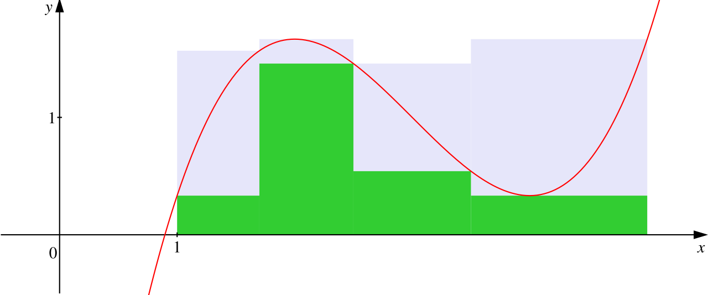
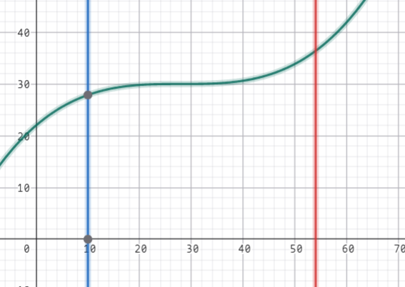
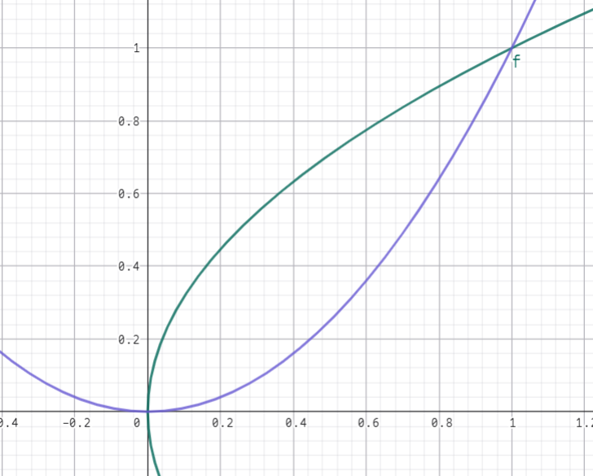

定义 定积分
设函数 f f f [ a , b ] [a, b] [ a , b ] [ a , b ] [a, b] [ a , b ] x 0 , x 1 , x 2 , ⋯ , x n x_0, x_1, x_2, \cdots, x_n x 0 , x 1 , x 2 , ⋯ , x n
P : a = x 0 < x 1 < x 2 < ⋯ < x n = b P: a = x_0 < x_1 < x_2 < \cdots < x_n = b P : a = x 0 < x 1 < x 2 < ⋯ < x n = b
并在每个小区间 x k − 1 , x k x_{k - 1}, x_k x k − 1 , x k ξ k \xi_k ξ k Δ x k = x k − x k − 1 \Delta x_k = x_{k} - x_{k - 1} Δ x k = x k − x k − 1
令 ∣ ∣ P ∣ ∣ = max { Δ x k : k = 1 , 2 , ⋯ , n } ||P|| = \max\{\Delta x_k : k = 1,2,\cdots, n\} ∣∣ P ∣∣ = max { Δ x k : k = 1 , 2 , ⋯ , n } P P P
做和式 ∑ k = 1 n f ( ξ k ) Δ x k \sum\limits_{k = 1}^{n}f(\xi_k)\Delta x_k k = 1 ∑ n f ( ξ k ) Δ x k ∣ ∣ P ∣ ∣ → 0 ||P|| \to 0 ∣∣ P ∣∣ → 0 lim ∣ ∣ P ∣ ∣ → 0 ∑ k = 1 n f ( ξ k ) Δ x k \lim\limits_{||P|| \to 0}\sum\limits_{k = 1}^{n}f(\xi_k)\Delta x_k ∣∣ P ∣∣ → 0 lim k = 1 ∑ n f ( ξ k ) Δ x k ξ k \xi_k ξ k f f f [ a , b ] [a, b] [ a , b ] f f f [ a , b ] [a, b] [ a , b ] I = ∫ a b f ( x ) d x I = \displaystyle\int_{a}^{b}f(x)\text{d}x I = ∫ a b f ( x ) d x
注1：∣ ∣ P ∣ ∣ → 0 ||P|| \to 0 ∣∣ P ∣∣ → 0 n → ∞ n \to \infty n → ∞
注2：∫ f ( x ) d x \displaystyle\int f(x)\text{d}x ∫ f ( x ) d x ∫ a b f ( x ) d x \displaystyle\int_{a}^{b}f(x)\text{d}x ∫ a b f ( x ) d x
注3：该和式称为划分 P P P
注4：要求 b ≥ a b \ge a b ≥ a b < a b < a b < a ∫ a b f ( x ) d x \displaystyle\int_{a}^{b}f(x)\text{d}x ∫ a b f ( x ) d x − ∫ b a f ( x ) d ( x ) -\displaystyle\int_{b}^{a}f(x)\text{d}(x) − ∫ b a f ( x ) d ( x )
例
判断 Dirichlet 函数 D ( x ) = { 1 , x ∈ Q 0 , x ∈ Q D(x) = \begin{cases}1, x\in\mathbb Q \\ 0, x \in \mathbb Q\end{cases} D ( x ) = { 1 , x ∈ Q 0 , x ∈ Q
取划分 P : 0 = x 0 < x 1 < x 2 < ⋯ < x n = 1 P: 0 = x_0 < x_1 < x_2 < \cdots < x_n = 1 P : 0 = x 0 < x 1 < x 2 < ⋯ < x n = 1
作和式：∑ k = 1 n D ( ξ k ) Δ x k \sum\limits_{k = 1}^{n}D(\xi_k)\Delta x_k k = 1 ∑ n D ( ξ k ) Δ x k
若 ξ k \xi_k ξ k lim ∣ ∣ P ∣ ∣ → 0 ∑ k = 1 n D ( ξ k ) Δ x k = 0 \lim\limits_{||P|| \to 0} \sum\limits_{k = 1}^{n}D(\xi_k)\Delta x_k = 0 ∣∣ P ∣∣ → 0 lim k = 1 ∑ n D ( ξ k ) Δ x k = 0
如果取无理数则 = 1 =1 = 1
这说明和划分有关系，故 Dirichlet 函数不是 Riemann 可积的
定义 Darboux 和
设 f f f [ a , b ] [a, b] [ a , b ] f f f [ a , b ] [a,b] [ a , b ] M , m M, m M , m
取 [ a , b ] [a,b] [ a , b ] P : a = x 0 < x 1 < x 2 ⋯ < x n = b P : a = x_0 < x_1 < x_2 \cdots < x_n = b P : a = x 0 < x 1 < x 2 ⋯ < x n = b
设 f f f M k , m k M_k, m_k M k , m k
即 M k = sup { f ( x ) : x ∈ [ x k − 1 , x k ] } , m k = inf { f ( x ) : x ∈ [ x k − 1 , x k ] } M_k = \sup\{f(x) : x \in [x_{k - 1}, x_k]\}, m_k = \inf \{f(x) : x \in [x_{k - 1}, x_{k}]\} M k = sup { f ( x ) : x ∈ [ x k − 1 , x k ]} , m k = inf { f ( x ) : x ∈ [ x k − 1 , x k ]}
定义两个与 P P P
S ‾ ( P ) = ∑ k = 1 n M k Δ x k , S ‾ ( P ) = ∑ k = 1 n m k Δ x k \overline{S}(P) = \sum\limits_{k = 1}^{n}M_k \Delta x_k, \underline{S}(P) = \sum\limits_{k = 1}^{n}m_k \Delta x_k S ( P ) = k = 1 ∑ n M k Δ x k , S ( P ) = k = 1 ∑ n m k Δ x k
对于 ∀ ξ k ∈ [ x k − 1 , x k ] \forall \xi_k \in [x_{k - 1}, x_k] ∀ ξ k ∈ [ x k − 1 , x k ]
S ‾ ( P ) = ∑ k = 1 n m k Δ x k ≤ ∑ k = 1 n f ( ξ k ) Δ x k ≤ ∑ k = 1 n M k Δ x k = S ‾ ( P ) \underline{S}(P) = \sum\limits_{k = 1}^{n}m_k\Delta x_k \le \sum\limits_{k = 1}^{n}f(\xi_k)\Delta x_k \le \sum\limits_{k = 1}^{n}M_k \Delta x_k = \overline{S}(P) S ( P ) = k = 1 ∑ n m k Δ x k ≤ k = 1 ∑ n f ( ξ k ) Δ x k ≤ k = 1 ∑ n M k Δ x k = S ( P )
其中 S ‾ ( P ) , S ‾ ( P ) \overline{S}(P), \underline{S}(P) S ( P ) , S ( P ) f f f P P P
Darboux 上和就是用几个“高估”的矩形面积逼近积分。
Darboux 下和就是用几个“低估”的矩形面积逼近积分。
可以看这张图：

灰色部分是上和，绿色部分是下和。
引理
在 [ a , b ] [a,b] [ a , b ]
证明：
Darboux 上和：∑ k = 1 n M k Δ x k \sum\limits_{k = 1}^{n}M_k\Delta x_k k = 1 ∑ n M k Δ x k
在 [ x k − 1 , x k ] [x_{k - 1}, x_k] [ x k − 1 , x k ] d d d [ l , d ] , [ d , r ] [l, d], [d, r] [ l , d ] , [ d , r ]
S ‾ ( P ) ′ = S ‾ ( P ) − M k Δ x k + sup { f ( x ) , x ∈ [ l , d ] } ( d − l ) + sup { f ( x ) , x ∈ [ d , r ] } ( r − d ) \overline S(P)^{\prime} = \overline S(P) - M_k\Delta x_k + \sup\{f(x), x \in [l, d]\}(d - l) + \sup\{f(x), x \in [d, r]\}(r - d) S ( P ) ′ = S ( P ) − M k Δ x k + sup { f ( x ) , x ∈ [ l , d ]} ( d − l ) + sup { f ( x ) , x ∈ [ d , r ]} ( r − d )
由于 M k ≥ sup { f ( x ) , x ∈ [ l , d ] } + sup { f ( x ) , x ∈ [ d , r ] } , Δ x k = ( d − l ) + ( r − d ) M_k \ge \sup\{f(x), x \in [l, d]\} + \sup\{f(x), x \in [d, r]\}, \Delta x_k = (d - l) + (r - d) M k ≥ sup { f ( x ) , x ∈ [ l , d ]} + sup { f ( x ) , x ∈ [ d , r ]} , Δ x k = ( d − l ) + ( r − d )
S ‾ ( P ) ′ ≤ S ‾ ( P ) \overline S(P)^{\prime} \le \overline S(P) S ( P ) ′ ≤ S ( P )
下和同理。
引理
对 [ a , b ] [a, b] [ a , b ] { S ‾ ( P ) ∣ P 是 [ a , b ] 的划分 } \{\overline{S}(P) | P 是 [a, b] 的划分\} { S ( P ) ∣ P 是 [ a , b ] 的划分 } m ( b − a ) m(b - a) m ( b − a ) l l l
同样，下和作成的集合有上界 M ( b − a ) M(b - a) M ( b − a ) L L L
其中 M , m M, m M , m f f f [ a , b ] [a, b] [ a , b ]
∑ k = 1 n M k Δ x k ≥ ∑ k = 1 n m x k = m ( b − a ) \sum\limits_{k = 1}^{n}M_k\Delta x_k \ge \sum\limits_{k = 1}^{n}m x_k = m(b - a) k = 1 ∑ n M k Δ x k ≥ k = 1 ∑ n m x k = m ( b − a )
引理
固定 [ a , b ] [a,b] [ a , b ] P , Q P, Q P , Q S ‾ ( P ) ≤ S ‾ ( Q ) \underline{S}(P) \le \overline{S}(Q) S ( P ) ≤ S ( Q )
S ‾ ( P ) ≤ L ≤ l ≤ S ‾ ( Q ) \underline{S}(P) \le L \le l \le \overline{S}(Q) S ( P ) ≤ L ≤ l ≤ S ( Q )
其中：l = inf { S ‾ ( Ω ) ∣ Ω 是 [ a , b ] 的一个划分 } l = \inf\{\overline{S}(\Omega) | \Omega 是 [a,b] 的一个划分\} l = inf { S ( Ω ) ∣Ω 是 [ a , b ] 的一个划分 }
L = sup { S ‾ ( Ω ) ∣ Ω 是 [ a , b ] 的一个划分 } L = \sup \{\underline{S}(\Omega) | \Omega 是 [a,b] 的一个划分\} L = sup { S ( Ω ) ∣Ω 是 [ a , b ] 的一个划分 }
证明：
利用增加分点的引理将 P , Q P, Q P , Q K K K
{ S ‾ ( K ) ≤ S ‾ ( Q ) , S ‾ ( K ) ≤ S ‾ ( P ) S ‾ ( K ) ≥ S ‾ ( P ) , S ‾ ( K ) ≥ S ‾ ( Q ) \begin{cases}\overline S(K) \le \overline S(Q), \overline S(K) \le \overline S(P) \\ \underline S(K) \ge \underline S(P), \underline S(K) \ge \underline S(Q)\end{cases} { S ( K ) ≤ S ( Q ) , S ( K ) ≤ S ( P ) S ( K ) ≥ S ( P ) , S ( K ) ≥ S ( Q )
那么 S ‾ ( P ) ≤ S ‾ ( K ) ≤ S ‾ ( Q ) \underline S(P) \le \underline S(K) \le \overline S(Q) S ( P ) ≤ S ( K ) ≤ S ( Q )
接下来证明 L ≤ l L \le l L ≤ l
固定 Q Q Q P P P [ a , b ] [a, b] [ a , b ] P P P Q Q Q
L = sup { S ‾ ( P ) : P 是 [ a , b ] 的划分 } ≤ S ‾ ( Q ) L = \sup\{\underline S(P) : P 是 [a, b] 的划分\} \le \overline S(Q) L = sup { S ( P ) : P 是 [ a , b ] 的划分 } ≤ S ( Q )
然后再让 Q Q Q L ≤ l L \le l L ≤ l
定理 Darboux 定理
对任意在 [ a , b ] [a, b] [ a , b ] f ( x ) f(x) f ( x )
lim ∣ ∣ P ∣ ∣ → 0 S ‾ ( P ) = L , lim ∣ ∣ P ∣ ∣ → 0 S ‾ ( P ) = l \lim\limits_{||P|| \to 0}\underline{S}(P) = L, \lim\limits_{||P|| \to 0} \overline{S}(P) = l ∣∣ P ∣∣ → 0 lim S ( P ) = L , ∣∣ P ∣∣ → 0 lim S ( P ) = l
其中：
L = sup { S ‾ ( P ) ∣ P 是 [ a , b ] 的一个划分 } L = \sup \{\underline{S}(P) | P 是 [a,b] 的一个划分\} L = sup { S ( P ) ∣ P 是 [ a , b ] 的一个划分 }
l = inf { S ‾ ( P ) ∣ P 是 [ a , b ] 的一个划分 } l = \inf\{\overline{S}(P) | P 是 [a,b] 的一个划分\} l = inf { S ( P ) ∣ P 是 [ a , b ] 的一个划分 }
只讨论上和下确界和下和上确界的原因是上和上确界还有下和下确界是平凡的没有必要讨论。
这里的 l l l I ⋆ I^{\star} I ⋆ L L L I ⋆ I_{\star} I ⋆
证明：
就是要证明 ∀ ϵ > 0 , ∃ δ s.t. ∣ ∣ P ∣ ∣ < δ : ∣ S ‾ ( P ) − l ∣ < ϵ \forall \epsilon > 0, \exists \delta \text{ s.t. } ||P|| < \delta : |\overline S(P) - l| < \epsilon ∀ ϵ > 0 , ∃ δ s.t. ∣∣ P ∣∣ < δ : ∣ S ( P ) − l ∣ < ϵ
设 P P P [ a , b ] [a, b] [ a , b ]
根据下确界的定义，∃ P ϵ s.t. P ϵ − ϵ < l \exists P_\epsilon \text{ s.t. } P_{\epsilon} - \epsilon < l ∃ P ϵ s.t. P ϵ − ϵ < l
设 P ϵ P_\epsilon P ϵ N N N
将 P , P ϵ P, P_\epsilon P , P ϵ Q Q Q
根据引理：{ S ‾ ( Q ) ≤ S ‾ ( P ) S ‾ ( Q ) ≤ S ‾ ( P ϵ ) \begin{cases}\overline S(Q) \le \overline S(P) \\ \overline S(Q) \le \overline S(P_\epsilon)\end{cases} { S ( Q ) ≤ S ( P ) S ( Q ) ≤ S ( P ϵ )
由于多一个分点，上和至多减少 ( M − m ) ∣ ∣ P ∣ ∣ (M - m)||P|| ( M − m ) ∣∣ P ∣∣ S ‾ ( Q ) − S ‾ ( P ) ≤ N ( M − m ) ∣ ∣ P ∣ ∣ \overline S(Q) - \overline S(P) \le N(M - m)||P|| S ( Q ) − S ( P ) ≤ N ( M − m ) ∣∣ P ∣∣
当 ∣ ∣ P ∣ ∣ → 0 ||P|| \to 0 ∣∣ P ∣∣ → 0 < δ < \delta < δ δ = ϵ N ( M − m ) \delta = \dfrac{\epsilon}{N(M - m)} δ = N ( M − m ) ϵ
于是 S ‾ ( P ) − S ‾ ( Q ) ≤ N ( M − m ) ∣ ∣ P ∣ ∣ < ϵ \overline S(P) - \overline S(Q) \le N(M - m)||P|| < \epsilon S ( P ) − S ( Q ) ≤ N ( M − m ) ∣∣ P ∣∣ < ϵ
因为 S ‾ ( Q ) ≤ S ‾ ( P ϵ ) ≤ l + ϵ \overline S(Q) \le \overline S(P_\epsilon) \le l + \epsilon S ( Q ) ≤ S ( P ϵ ) ≤ l + ϵ
所以 S ‾ ( P ) < S ‾ ( Q ) + ϵ ≤ l + 2 ϵ \overline S(P) < \overline S(Q) + \epsilon \le l + 2\epsilon S ( P ) < S ( Q ) + ϵ ≤ l + 2 ϵ
又因为 l l l S ‾ \overline S S
l − ϵ < l < S ‾ ( P ) < l + ϵ l - \epsilon < l < \overline S(P) < l + \epsilon l − ϵ < l < S ( P ) < l + ϵ
证明思路大概就是，增加分点对上和的减少量在划分的范数很小的时候也很小，是可以被控制到不大于一个常数的，那么我随便找一个距离 l l l P ϵ P_\epsilon P ϵ P P P Q Q Q P → Q → P ϵ → l P \to Q \to P_\epsilon \to l P → Q → P ϵ → l
定理 Riemann 可积的第一充分必要条件
设 f f f [ a , b ] [a,b] [ a , b ] l , L l, L l , L
则 f f f [ a , b ] [a,b] [ a , b ] f ∈ R ( [ a , b ] ) f \in R([a, b]) f ∈ R ([ a , b ])
L = l L = l L = l lim ∣ ∣ P ∣ ∣ → 0 ( S ‾ ( P ) − S ‾ ( P ) ) = 0 ⟺ lim ∣ ∣ P ∣ ∣ → 0 [ ∑ k = 1 n ( M k − m k ) Δ x k ] = 0 \lim\limits_{||P|| \to 0} (\overline{S}(P) - \underline{S}(P)) = 0 \iff \lim\limits_{||P|| \to 0} \left[\sum\limits_{k = 1}^{n}(M_k - m_k)\Delta x_k\right] = 0 ∣∣ P ∣∣ → 0 lim ( S ( P ) − S ( P )) = 0 ⟺ ∣∣ P ∣∣ → 0 lim [ k = 1 ∑ n ( M k − m k ) Δ x k ] = 0
证明：
必要性 ⇒ \Rightarrow ⇒
假设 f f f [ a , b ] [a, b] [ a , b ]
对于 [ a , b ] [a, b] [ a , b ] P : a = x 0 < x 1 < x 2 < ⋯ < x n = b P: a = x_0 < x_1 < x_2 < \cdots < x_n = b P : a = x 0 < x 1 < x 2 < ⋯ < x n = b
以及任意一个点 ξ k ∈ [ x k − 1 , x k ] \xi_k \in [x_{k - 1}, x_k] ξ k ∈ [ x k − 1 , x k ]
极限：lim ∣ ∣ P ∣ ∣ → 0 ∑ k = 1 n ( f ( ξ k ) ) Δ x k = A \lim\limits_{||P||\to 0}\sum\limits_{k = 1}^{n}(f(\xi_k))\Delta x_k = A ∣∣ P ∣∣ → 0 lim k = 1 ∑ n ( f ( ξ k )) Δ x k = A A A A [ a , b ] [a, b] [ a , b ] P P P ξ k \xi_k ξ k
这个条件等价于：∀ ϵ > 0 , ∃ δ > 0 s.t. ∣ ∣ P ∣ ∣ < δ : ∣ ∑ k = 1 n f ( ξ k ) Δ x k − A ∣ < ϵ \forall \epsilon > 0, \exists \delta > 0 \text{ s.t. } ||P|| < \delta : |\sum\limits_{k = 1}^{n}f(\xi_k)\Delta x_k - A| < \epsilon ∀ ϵ > 0 , ∃ δ > 0 s.t. ∣∣ P ∣∣ < δ : ∣ k = 1 ∑ n f ( ξ k ) Δ x k − A ∣ < ϵ
设 M k = sup { f ( x ) : x ∈ [ x k − 1 , x k ] } , k = 1 , 2 , 3 , ⋯ , n M_k = \sup\{f(x): x \in [x_{k - 1}, x_k]\}, k = 1,2,3,\cdots,n M k = sup { f ( x ) : x ∈ [ x k − 1 , x k ]} , k = 1 , 2 , 3 , ⋯ , n
根据上确界的定义，对前面的 ϵ > 0 , ∃ η k ∈ [ x k − 1 , x k ] s.t. M k − ϵ < f ( η k ) ≤ M k \epsilon > 0, \exists \eta_k \in [x_{k - 1}, x_k] \text{ s.t. } M_k - \epsilon < f(\eta_k) \le M_k ϵ > 0 , ∃ η k ∈ [ x k − 1 , x k ] s.t. M k − ϵ < f ( η k ) ≤ M k
即 0 ≤ M k − f ( η k ) < ϵ 0 \le M_k - f(\eta_k) < \epsilon 0 ≤ M k − f ( η k ) < ϵ
那么 ∣ S ‾ ( P ) − ∑ k = 1 n f ( η k ) Δ x k ∣ = ∣ ∑ k = 1 n [ M k − f ( η k ) ] Δ x k ∣ ≤ ( b − a ) ϵ |\overline{S}(P) - \sum\limits_{k = 1}^{n} f(\eta_k)\Delta x_k|=|\sum\limits_{k = 1}^{n}\left[M_k - f(\eta_k)\right]\Delta x_k| \le (b-a)\epsilon ∣ S ( P ) − k = 1 ∑ n f ( η k ) Δ x k ∣ = ∣ k = 1 ∑ n [ M k − f ( η k ) ] Δ x k ∣ ≤ ( b − a ) ϵ
上面的等价条件当然可以写作：∣ ∑ k = 1 n f ( η k ) Δ x k − A ∣ < ϵ |\sum\limits_{k = 1}^{n}f(\eta_k)\Delta x_k - A| < \epsilon ∣ k = 1 ∑ n f ( η k ) Δ x k − A ∣ < ϵ
根据三角不等式：∣ S ‾ ( P ) − A ∣ ≤ ∣ S ‾ ( P ) − ∑ k = 1 n f ( η k ) Δ x k ∣ + ∣ ∑ k = 1 n f ( η k ) Δ x k − A ∣ < c ϵ |\overline{S}(P) - A| \le |\overline{S}(P) - \sum\limits_{k = 1}^{n}f(\eta_k)\Delta x_k| + |\sum\limits_{k = 1}^{n}f(\eta_k)\Delta x_k - A| < c \epsilon ∣ S ( P ) − A ∣ ≤ ∣ S ( P ) − k = 1 ∑ n f ( η k ) Δ x k ∣ + ∣ k = 1 ∑ n f ( η k ) Δ x k − A ∣ < cϵ
当然，条件是 ∣ ∣ P ∣ ∣ < δ ||P|| < \delta ∣∣ P ∣∣ < δ
根据 ϵ δ \epsilon \delta ϵδ
下和同理。
充分性 ⇐ \Leftarrow ⇐ lim ∣ ∣ P ∣ ∣ → 0 S ‾ ( P ) = lim ∣ ∣ P ∣ ∣ → 0 S ‾ ( P ) = A \lim\limits_{||P|| \to 0} \overline{S}(P) = \lim\limits_{||P|| \to 0} \underline{S}(P) = A ∣∣ P ∣∣ → 0 lim S ( P ) = ∣∣ P ∣∣ → 0 lim S ( P ) = A
对于 [ a , b ] [a, b] [ a , b ] P : a = x 0 < x 1 < x 2 < ⋯ < x n = b P: a = x_0 < x_1 < x_2 < \cdots < x_n = b P : a = x 0 < x 1 < x 2 < ⋯ < x n = b ξ k ∈ [ x k − 1 , x k ] \xi_k \in [x_{k - 1}, x_k] ξ k ∈ [ x k − 1 , x k ]
显然可以得知：
和式：∑ k = 1 n m k Δ x k ≤ ∑ k = 1 n f ( ξ k ) Δ x k ≤ ∑ k = 1 n M k Δ x k \sum\limits_{k = 1}^{n}m_k\Delta x_k \le \sum\limits_{k = 1}^{n}f(\xi_k)\Delta x_k \le \sum\limits_{k = 1}^{n}M_k\Delta x_k k = 1 ∑ n m k Δ x k ≤ k = 1 ∑ n f ( ξ k ) Δ x k ≤ k = 1 ∑ n M k Δ x k
前者就是下和，后者就是上和。
令 ∣ ∣ P ∣ ∣ → 0 ||P|| \to 0 ∣∣ P ∣∣ → 0
定理 Riemann 可积的第二充分必要条件
设 f f f [ a , b ] [a, b] [ a , b ]
则：
f ∈ R ( [ a , b ] ) ⟺ ∀ σ , ϵ > 0 , ∃ δ > 0 s.t. when P : a = x 0 < x 1 < x 2 < ⋯ < x n = b satisify ∣ ∣ P ∣ ∣ < δ : ∀ range s.t. w j ≥ ϵ , the sum of length of these range ≤ σ , w j = M j − m j , j = 1 , 2 , 3 , ⋯ , n f \in R([a, b]) \iff \forall \sigma, \epsilon > 0, \exists \delta > 0 \text{ s.t. when } P: a = x_0 < x_1 < x_2 < \cdots < x_n = b \text { satisify } ||P|| < \delta: \forall \text{ range s.t. }w_j \ge \epsilon, \text{the sum of length of these range} \le \sigma, w_j = M_j - m_j, j = 1,2,3,\cdots,n f ∈ R ([ a , b ]) ⟺ ∀ σ , ϵ > 0 , ∃ δ > 0 s.t. when P : a = x 0 < x 1 < x 2 < ⋯ < x n = b satisify ∣∣ P ∣∣ < δ : ∀ range s.t. w j ≥ ϵ , the sum of length of these range ≤ σ , w j = M j − m j , j = 1 , 2 , 3 , ⋯ , n
容易验证：w j = sup { ∣ f ( x ) − f ( y ) ∣ : x , y ∈ [ x k − 1 , x k ] } w_j = \sup \{|f(x) - f(y)| : x, y \in [x_{k - 1}, x_k]\} w j = sup { ∣ f ( x ) − f ( y ) ∣ : x , y ∈ [ x k − 1 , x k ]}
一个理解就是，这个函数如果要是 Riemann 可积，它大幅度震荡的地方非常小，变化相对来说比较平缓。
由此也可以看出连续函数一定是 Riemann 可积的。
中间的这个条件就是：∑ w j ≥ ϵ Δ x j < σ \sum\limits_{w_j \ge \epsilon}^{}\Delta x_j < \sigma w j ≥ ϵ ∑ Δ x j < σ
它是从几何意义上给出了一个 Riemann 可积的描述。
必要性：⇒ \Rightarrow ⇒
假设 f f f
∀ σ , ϵ > 0 , ∃ δ > 0 s.t. ∣ ∣ P ∣ ∣ < δ : ∑ k = 1 n ( M k − m k ) Δ x k < ϵ \forall \sigma, \epsilon > 0, \exists \delta > 0 \text{ s.t. } ||P|| < \delta : \sum\limits_{k = 1}^{n}(M_k - m_k)\Delta x_k < \epsilon ∀ σ , ϵ > 0 , ∃ δ > 0 s.t. ∣∣ P ∣∣ < δ : k = 1 ∑ n ( M k − m k ) Δ x k < ϵ
可以发现这就是 w j Δ x k w_j\Delta x_k w j Δ x k
假设 w j ≥ ϵ w_j \ge \epsilon w j ≥ ϵ [ x j t − 1 , x j t ] , t = 1 , 2 , 3 , ⋯ s [x_{j_t - 1}, x_{j_t}], t = 1,2,3,\cdots s [ x j t − 1 , x j t ] , t = 1 , 2 , 3 , ⋯ s
那么：
∑ w j ≥ ϵ Δ x j = ∑ t = 1 s Δ x j t \sum\limits_{w_j \ge \epsilon}^{}\Delta x_j = \sum\limits_{t = 1}^{s}\Delta x_{j_t} w j ≥ ϵ ∑ Δ x j = t = 1 ∑ s Δ x j t
两边同乘 ϵ \epsilon ϵ
ϵ ∑ w j ≥ ϵ Δ x j = ϵ ∑ t = 1 s Δ x j t ≤ ∑ t = 1 s w j t Δ x j t \epsilon \sum\limits_{w_j \ge \epsilon}^{}\Delta x_j = \epsilon\sum\limits_{t = 1}^{s}\Delta x_{j_t} \le \sum\limits_{t = 1}^{s}w_{j_t} \Delta x_{j_t} ϵ w j ≥ ϵ ∑ Δ x j = ϵ t = 1 ∑ s Δ x j t ≤ t = 1 ∑ s w j t Δ x j t
正数的部分求和一定小于整体：
≤ ∑ k = 1 n w k Δ x k < ϵ \le \sum\limits_{k = 1}^{n}w_k \Delta x_k < \epsilon ≤ k = 1 ∑ n w k Δ x k < ϵ
然后发现会被消掉，希望后面能有 σ \sigma σ
因为δ − ϵ \delta-\epsilon δ − ϵ σ \sigma σ
所以后面的 ϵ \epsilon ϵ σ ϵ \sigma \epsilon σ ϵ
充分性 ⇐ \Leftarrow ⇐
当 ∑ w j ≥ ϵ Δ x j < σ \sum\limits_{w_j \ge \epsilon}^{}\Delta x_j < \sigma w j ≥ ϵ ∑ Δ x j < σ
下证 f f f
设这些小区间有：[ x j t − 1 , x j t ] , t = 1 , 2 , 3 , ⋯ , s [x_{j_t - 1}, x_{j_t}], t = 1,2,3,\cdots, s [ x j t − 1 , x j t ] , t = 1 , 2 , 3 , ⋯ , s
满足：∑ t = 1 s Δ x j t < σ \sum\limits_{t = 1}^{s}\Delta x_{j_t} < \sigma t = 1 ∑ s Δ x j t < σ
只需要想办法写成第一充要条件的形式。
= ∑ k = 1 n w k Δ x k = ∑ t = 1 s w j t Δ x j t + ∑ k ∈ { 1 , 2 , 3 , ⋯ n } / { j 1 , j 2 , ⋯ j s } w k Δ x k < ∑ t = 1 s ( M − m ) Δ x j t + ϵ ∑ k = 1 n Δ x k = \sum\limits_{k = 1}^{n}w_k\Delta x_k = \sum\limits_{t = 1}^{s}w_{j_t}\Delta x_{j_t} + \sum\limits_{k \in\{1,2,3,\cdots n\} /\{j_1, j_2, \cdots j_s\}} w_k \Delta x_k < \sum\limits_{t = 1}^{s}(M - m)\Delta x_{j_t} + \epsilon\sum\limits_{k = 1}^{n}\Delta x_k = k = 1 ∑ n w k Δ x k = t = 1 ∑ s w j t Δ x j t + k ∈ { 1 , 2 , 3 , ⋯ n } / { j 1 , j 2 , ⋯ j s } ∑ w k Δ x k < t = 1 ∑ s ( M − m ) Δ x j t + ϵ k = 1 ∑ n Δ x k
这里放缩了两步，前者用了 w j ≤ M − m w_j \le M - m w j ≤ M − m w j < ϵ w_j < \epsilon w j < ϵ
上面: < ( M − m ) σ + ( b − a ) ϵ < (M - m)\sigma + (b - a)\epsilon < ( M − m ) σ + ( b − a ) ϵ
也就是 ∀ σ , ϵ > 0 , ∃ δ > 0 , ∣ ∣ P ∣ ∣ < δ : ∑ k = 1 n w k Δ x k < ( M − m ) σ + ( b − a ) ϵ \forall \sigma, \epsilon > 0, \exists \delta > 0, ||P|| < \delta : \sum\limits_{k = 1}^{n}w_k\Delta x_k < (M - m)\sigma + (b - a)\epsilon ∀ σ , ϵ > 0 , ∃ δ > 0 , ∣∣ P ∣∣ < δ : k = 1 ∑ n w k Δ x k < ( M − m ) σ + ( b − a ) ϵ
由于 σ , ϵ \sigma, \epsilon σ , ϵ
可以知道 lim ∣ ∣ P ∣ ∣ → 0 ∑ k = 1 n w k Δ x k = 0 \lim\limits_{||P|| \to 0} \sum\limits_{k = 1}^{n} w_k \Delta x_k = 0 ∣∣ P ∣∣ → 0 lim k = 1 ∑ n w k Δ x k = 0
定理 Riemann 可积的第三充分必要条件
假设 f f f [ a , b ] [a, b] [ a , b ]
则: f ∈ R ( [ a , b ] ) ⟺ f\in R([a, b])\iff f ∈ R ([ a , b ]) ⟺ η > 0 \eta > 0 η > 0 [ a , b ] [a, b] [ a , b ] P : a = x 0 < x 1 < x 2 < ⋯ < x n = b P: a = x_0 < x_1 < x_2 < \cdots < x_n = b P : a = x 0 < x 1 < x 2 < ⋯ < x n = b
∑ k = 1 n w k Δ x k < η \sum\limits_{k = 1}^{n} w_k \Delta x_k < \eta k = 1 ∑ n w k Δ x k < η
证明：
⇒ \Rightarrow ⇒
⇐ \Leftarrow ⇐
∀ ϵ , σ > 0 \forall \epsilon, \sigma > 0 ∀ ϵ , σ > 0
令 η = σ ϵ \eta = \sigma \epsilon η = σ ϵ
由假设：存在划分 P : a = x 0 < x 1 < x 2 < ⋯ < x n = b P: a = x_0 < x_1 < x_2 < \cdots < x_n = b P : a = x 0 < x 1 < x 2 < ⋯ < x n = b ∑ k = 1 n w k Δ x k < η \sum\limits_{k = 1}^{n} w_k\Delta x_k < \eta k = 1 ∑ n w k Δ x k < η
用第二充要条件，拿出来振幅比较大的：
∑ w k ≥ ϵ Δ ϵ w j ≤ ∑ k = 1 n w k Δ x k < σ ϵ \sum\limits_{w_k \ge \epsilon}^{}\Delta \epsilon w_j \le \sum\limits_{k = 1}^{n}w_k\Delta x_k < \sigma \epsilon w k ≥ ϵ ∑ Δ ϵ w j ≤ k = 1 ∑ n w k Δ x k < σ ϵ
那么 f f f
实际使用的时候一般是：
∀ η > 0 , ∃ δ > 0 , s.t. when ∣ ∣ P ∣ ∣ < δ : ∑ k = 1 n w k Δ x k < η \forall \eta > 0, \exists \delta > 0, \text{ s.t. when } ||P|| < \delta : \sum\limits_{k = 1}^{n}w_k\Delta x_k < \eta ∀ η > 0 , ∃ δ > 0 , s.t. when ∣∣ P ∣∣ < δ : k = 1 ∑ n w k Δ x k < η
当然这个也是有几何意义的：
命题
注意到谈论 Riemann 可积的时候都有“有界”这个前提。
是否能够去掉这个前提？
若 f f f [ a , b ] [a,b] [ a , b ] A ∈ R A\in \mathbb R A ∈ R ∀ ϵ > 0 , ∃ δ s.t. ∀ P : a = x 0 < x 1 < x 2 < ⋯ < x n = b , if ∣ ∣ P ∣ ∣ < δ then ∣ ∑ k = 1 n f ( ξ k ) Δ x k − A ∣ < ϵ \forall \epsilon > 0, \exists \delta \text{ s.t. } \forall P: a=x_0 < x_1 < x_2 <\cdots < x_n = b, \text{ if } ||P|| < \delta \text{ then } |\sum\limits_{k = 1}^{n}f(\xi_k)\Delta x_k - A| < \epsilon ∀ ϵ > 0 , ∃ δ s.t. ∀ P : a = x 0 < x 1 < x 2 < ⋯ < x n = b , if ∣∣ P ∣∣ < δ then ∣ k = 1 ∑ n f ( ξ k ) Δ x k − A ∣ < ϵ ξ k ∈ [ x k − 1 , x k ] , k = 1 , 2 , ⋯ , n \xi_k \in [x_{k - 1}, x_k], k = 1,2,\cdots, n ξ k ∈ [ x k − 1 , x k ] , k = 1 , 2 , ⋯ , n
那么 f f f [ a , b ] [a, b] [ a , b ]
但是反之不然（反例：Dirichlet 函数）
只能考虑反证法：
假设 f f f [ a , b ] [a,b] [ a , b ]
想要证明 f f f
∀ B ∈ R , ∃ ϵ 0 > 0 , s.t. ∀ δ > 0 , ∃ Q : a = x 0 < x 1 < x 2 < ⋯ < x n = b and ξ k ∈ [ x k − 1 , x k ] , though ∣ ∣ Q ∣ ∣ < δ , ∣ ∑ k = 1 n f ( ξ k ) Δ x k − B ∣ ≥ ϵ 0 \forall B \in \mathbb R, \exists \epsilon_0 > 0, \text{ s.t. } \forall \delta > 0, \exists Q: a = x_0 < x_1 < x_2 < \cdots < x_n= b \text { and } \xi_k \in [x_{k - 1}, x_k], \text{ though } ||Q|| < \delta, |\sum\limits_{k = 1}^{n}f(\xi_k)\Delta x_k - B| \ge \epsilon_0 ∀ B ∈ R , ∃ ϵ 0 > 0 , s.t. ∀ δ > 0 , ∃ Q : a = x 0 < x 1 < x 2 < ⋯ < x n = b and ξ k ∈ [ x k − 1 , x k ] , though ∣∣ Q ∣∣ < δ , ∣ k = 1 ∑ n f ( ξ k ) Δ x k − B ∣ ≥ ϵ 0
由于 f f f [ x j − 1 , x j ] [x_{j -1}, x_{j}] [ x j − 1 , x j ] f f f
在这个小区间中，可以挑出一点 ξ j ∈ [ x j − 1 , x j ] s.t. ∣ f ( ξ j ) ∣ > ? \xi_j \in [x_{j - 1}, x_j] \text{ s.t. } |f(\xi_j)| > ? ξ j ∈ [ x j − 1 , x j ] s.t. ∣ f ( ξ j ) ∣ > ?
在其余的每个小区间，各取一点 ξ k ∈ [ x k − 1 , x k ] , k ≠ j \xi_k \in [x_{k - 1}, x_k], k \not= j ξ k ∈ [ x k − 1 , x k ] , k = j
∣ ∑ k = 1 n f ( ξ k ) Δ x k − B ∣ = ∣ ∑ k ≠ j f ( ξ k ) Δ x k + f ( ξ j ) Δ x j − B ∣ |\sum\limits_{k = 1}^{n} f(\xi_k)\Delta x_k - B|=|\sum\limits_{k \not= j}^{}f(\xi_k)\Delta x_k + f(\xi_j)\Delta x_j - B| ∣ k = 1 ∑ n f ( ξ k ) Δ x k − B ∣ = ∣ k = j ∑ f ( ξ k ) Δ x k + f ( ξ j ) Δ x j − B ∣
≥ ∣ f ( ξ j ) ∣ Δ x j − ∣ B ∣ − ∣ ∑ k ≠ j f ( ξ k ) Δ x k ∣ \ge |f(\xi_j)|\Delta x_j - |B| - |\sum\limits_{k \not=j}^{}f(\xi_k)\Delta x_k| ≥ ∣ f ( ξ j ) ∣Δ x j − ∣ B ∣ − ∣ k = j ∑ f ( ξ k ) Δ x k ∣
因为这里是存在一个 Q Q Q C C C
那么上面的 ? ? ? ∣ B ∣ + 2 ∣ C ∣ Δ x j \dfrac{|B| + 2|C|}{\Delta x_j} Δ x j ∣ B ∣ + 2∣ C ∣
这样对于这个 ξ j \xi_j ξ j
> ∣ B ∣ + 2 ∣ C ∣ Δ x j Δ x j − ∣ B ∣ − ∣ C ∣ = ∣ C ∣ > \dfrac{|B| + 2|C|}{\Delta x_j}\Delta x_j - |B| - |C| = |C| > Δ x j ∣ B ∣ + 2∣ C ∣ Δ x j − ∣ B ∣ − ∣ C ∣ = ∣ C ∣
由于 ∣ C ∣ |C| ∣ C ∣ ϵ 0 \epsilon_0 ϵ 0
可积函数类
定理 闭区间连续函数
闭区间连续函数总是 Riemann 可积
即：C ( [ a , b ] ) ⊂ R ( [ a , b ] ) C([a, b]) \subset R([a, b]) C ([ a , b ]) ⊂ R ([ a , b ])
证明：
利用 Cantor 定理，闭区间上连续函数一定是一致连续的。
从而：∀ ϵ > 0 , ∃ δ = δ ( ϵ ) s.t. x , y ∈ [ a , b ] , ∣ x − y ∣ < δ : ∣ f ( x ) − f ( y ) ∣ < ϵ \forall \epsilon > 0, \exists \delta=\delta(\epsilon) \text{ s.t. } x, y\in[a, b], |x - y| < \delta : |f(x) - f(y)| < \epsilon ∀ ϵ > 0 , ∃ δ = δ ( ϵ ) s.t. x , y ∈ [ a , b ] , ∣ x − y ∣ < δ : ∣ f ( x ) − f ( y ) ∣ < ϵ
很容易想到使用第一充要条件来判定
任取 [ a , b ] [a, b] [ a , b ] P P P ∣ ∣ P ∣ ∣ = max { Δ x k : k = 1 , 2 , 3 , ⋯ n } < δ ||P|| = \max\{\Delta x_k : k = 1,2,3,\cdots n\} < \delta ∣∣ P ∣∣ = max { Δ x k : k = 1 , 2 , 3 , ⋯ n } < δ
根据一致连续：一定会有 ∣ f ( x ) − f ( y ) ∣ < ϵ , ∀ x , y ∈ [ x k − 1 , x k ] |f(x) - f(y)| < \epsilon, \forall x, y \in [x_{k-1}, x_{k}] ∣ f ( x ) − f ( y ) ∣ < ϵ , ∀ x , y ∈ [ x k − 1 , x k ]
那么 ∑ k = 1 n ( M k − m k ) Δ x k ≤ ϵ ∑ k = 1 n Δ x k = ϵ ( b − a ) \sum\limits_{k = 1}^{n}(M_k - m_k)\Delta x_k \le \epsilon\sum\limits_{k = 1}^{n}\Delta x_k = \epsilon(b - a) k = 1 ∑ n ( M k − m k ) Δ x k ≤ ϵ k = 1 ∑ n Δ x k = ϵ ( b − a )
那么就证完了。
定理 有限间断点
在 [ a , b ] [a, b] [ a , b ]
证明：
考虑归纳法：
只需要证明 [ a , b ] [a, b] [ a , b ]
分三种情况：
c = a , c ∈ ( a , b ) , c = b c = a, c \in (a, b), c = b c = a , c ∈ ( a , b ) , c = b
其实本质没有任何区别，考虑 c = b c = b c = b
想用第三充要条件来做。
任取 0 < ϵ < b − a 0 < \epsilon < b - a 0 < ϵ < b − a η \eta η η < ϵ < b − a \eta < \epsilon < b - a η < ϵ < b − a
设 m < f ( x ) < M m < f(x) < M m < f ( x ) < M
由：f f f [ a , b − η ] [a, b - \eta] [ a , b − η ] [ a , b ] [a, b] [ a , b ]
所以存在 [ a , b − η ] [a, b - \eta] [ a , b − η ] P : a = x 0 < x 1 < x 2 < ⋯ < x n = b − η s.t. ∑ k = 1 n w k Δ x k < ϵ P: a=x_0 < x_1 < x_2 < \cdots < x_n = b - \eta \text{ s.t. } \sum\limits_{k = 1}^{n}w_k\Delta x_k < \epsilon P : a = x 0 < x 1 < x 2 < ⋯ < x n = b − η s.t. k = 1 ∑ n w k Δ x k < ϵ
设 f f f [ b − η , b ] [b - \eta, b] [ b − η , b ] w w w w ( b − ( b − η ) ) = w η < b w(b - (b - \eta)) = w\eta < b w ( b − ( b − η )) = w η < b
有：
∑ k = 1 n w k Δ x k + w η < ϵ + ( M − m ) η \sum\limits_{k = 1}^{n}w_k\Delta x_k + w\eta < \epsilon + (M - m)\eta k = 1 ∑ n w k Δ x k + w η < ϵ + ( M − m ) η
于是证完了。
定理 闭区间单调函数
闭区间 [ a , b ] [a, b] [ a , b ]
证明，不妨认为 f f f [ a , b ] [a, b] [ a , b ]
∀ ϵ > 0 \forall \epsilon > 0 ∀ ϵ > 0 [ a , b ] [a, b] [ a , b ] P : a = x 0 < x 1 < x 2 < ⋯ < x n = b P: a= x_0 < x_1 < x_2 < \cdots < x_n = b P : a = x 0 < x 1 < x 2 < ⋯ < x n = b
∑ k = 1 n w k Δ x k = ∑ k = 1 n ( f ( x k ) − f ( x k − 1 ) ) Δ x k ≤ ∑ k = 1 n [ f ( b ) − f ( a ) ] Δ x k = [ f ( b ) − f ( a ) ] ( b − a ) \sum\limits_{k = 1}^{n}w_k \Delta x_k = \sum\limits_{k = 1}^{n}(f(x_k) - f(x_{k - 1}))\Delta x_k \le \sum\limits_{k = 1}^{n}[f(b) - f(a)]\Delta x_k = \left[f(b) - f(a)\right]\left(b - a\right) k = 1 ∑ n w k Δ x k = k = 1 ∑ n ( f ( x k ) − f ( x k − 1 )) Δ x k ≤ k = 1 ∑ n [ f ( b ) − f ( a )] Δ x k = [ f ( b ) − f ( a ) ] ( b − a )
然后发现这个放缩不够彻底：
≤ ∑ k = 1 n [ f ( x k ) − f ( x k − 1 ) ] ⋅ ∣ ∣ P ∣ ∣ < δ ∑ k = 1 n [ f ( x k ) − f ( x k − 1 ) ] = [ f ( b ) − f ( a ) ] δ < ϵ \le \sum\limits_{k = 1}^{n}[f(x_k) - f(x_{k - 1})]\cdot ||P|| < \delta \sum\limits_{k = 1}^{n}[f(x_k) - f(x_{k - 1})] = [f(b) - f(a)]\delta < \epsilon ≤ k = 1 ∑ n [ f ( x k ) − f ( x k − 1 )] ⋅ ∣∣ P ∣∣ < δ k = 1 ∑ n [ f ( x k ) − f ( x k − 1 )] = [ f ( b ) − f ( a )] δ < ϵ
定理 Riemann 函数
ζ ( x ) = { 1 p , x = p q 1 , x = 0 0 , x ∈ R / Q \zeta(x) =\begin{cases}\dfrac{1}{p},x = \dfrac{p}{q} \\ 1, x = 0 \\ 0, x \in \mathbb R / \mathbb Q\end{cases} ζ ( x ) = ⎩ ⎨ ⎧ p 1 , x = q p 1 , x = 0 0 , x ∈ R / Q
证明：
由于 ζ ( x ) \zeta(x) ζ ( x ) R \mathbb R R 1 1 1
由于 ∀ ϵ > 0 \forall \epsilon > 0 ∀ ϵ > 0 [ 0 , 1 ] [0, 1] [ 0 , 1 ] ζ ( x ) ≥ ϵ \zeta(x) \ge \epsilon ζ ( x ) ≥ ϵ x x x y 1 , y 2 , ⋯ y N y_1, y_2, \cdots y_N y 1 , y 2 , ⋯ y N N N N ϵ \epsilon ϵ
这里用第二充要条件。
任取 σ > 0 \sigma > 0 σ > 0 [ 0 , 1 ] [0, 1] [ 0 , 1 ] P : 0 = x 0 < x 1 < x 2 < ⋯ < x n = 1 P: 0 = x_0 < x_1 < x_2 < \cdots < x_n = 1 P : 0 = x 0 < x 1 < x 2 < ⋯ < x n = 1
当 ∣ ∣ P ∣ ∣ < δ = σ 2 N ||P|| < \delta = \dfrac{\sigma}{2N} ∣∣ P ∣∣ < δ = 2 N σ ≥ ϵ \ge \epsilon ≥ ϵ y 1 , y 2 , ⋯ y n y_1, y_2,\cdots y_n y 1 , y 2 , ⋯ y n
这些小区间最多有 2 N 2N 2 N
∑ w k ≥ ϵ Δ x k ≤ ∑ w k ≥ ϵ ∣ ∣ P ∣ ∣ ≤ 2 N ∣ ∣ P ∣ ∣ < σ \sum\limits_{w_k \ge \epsilon}^{} \Delta x_k \le \sum\limits_{w_k \ge \epsilon}^{}||P|| \le 2N ||P|| < \sigma w k ≥ ϵ ∑ Δ x k ≤ w k ≥ ϵ ∑ ∣∣ P ∣∣ ≤ 2 N ∣∣ P ∣∣ < σ
证毕。
定理 复合函数
若 f ∈ R ( [ a , b ] ) , g ∈ R ( [ α , β ] ) f \in R([a, b]), g \in R([\alpha, \beta]) f ∈ R ([ a , b ]) , g ∈ R ([ α , β ]) g g g f f f f ( g ( x ) ) ∈ R ( [ α , β ] ) f(g(x)) \in R([\alpha, \beta]) f ( g ( x )) ∈ R ([ α , β ])
Riemann 积分的性质
命题
若 f ∈ R ( [ a , b ] ) , ∀ c ∈ R , c f ∈ R ( [ a , b ] ) f\in R([a, b]), \forall c \in \mathbb R, cf \in R([a, b]) f ∈ R ([ a , b ]) , ∀ c ∈ R , c f ∈ R ([ a , b ]) ∫ a b c f ( x ) d x = c ∫ a b d x \displaystyle\int\limits_{a}^{b} cf(x)\text{d}x = c\displaystyle\int_{a}^{b}\text{d}x a ∫ b c f ( x ) d x = c ∫ a b d x
设划分 P : a = x 0 < x 1 < x 2 < ⋯ < x n = b P: a=x_0 < x_1 < x_2 < \cdots < x_n=b P : a = x 0 < x 1 < x 2 < ⋯ < x n = b
在第 k k k [ x k − 1 , x k ] [x_{k-1},x_k] [ x k − 1 , x k ] M k = sup f M_k = \sup f M k = sup f m k = inf f m_k = \inf f m k = inf f w k = M k − m k w_k = M_k - m_k w k = M k − m k
先看 c ≥ 0 c\ge 0 c ≥ 0
对 c f cf c f sup ( c f ) = c M k \sup (cf) = cM_k sup ( c f ) = c M k inf ( c f ) = c m k \inf (cf) = cm_k inf ( c f ) = c m k
振幅 w k ( c f ) = c M k − c m k = c w k w_k(cf) = cM_k - cm_k = c w_k w k ( c f ) = c M k − c m k = c w k
Darboux 上和、下和：
S ‾ ( c f , P ) = ∑ c M k Δ x k = c ∑ M k Δ x k = c S ‾ ( f , P ) \overline{S}(cf, P) = \sum cM_k\Delta x_k = c\sum M_k\Delta x_k = c\overline{S}(f, P) S ( c f , P ) = ∑ c M k Δ x k = c ∑ M k Δ x k = c S ( f , P )
S ‾ ( c f , P ) = ∑ c m k Δ x k = c ∑ m k Δ x k = c S ‾ ( f , P ) \underline{S}(cf, P) = \sum cm_k\Delta x_k = c\sum m_k\Delta x_k = c\underline{S}(f, P) S ( c f , P ) = ∑ c m k Δ x k = c ∑ m k Δ x k = c S ( f , P )
因为 f f f ϵ > 0 \epsilon > 0 ϵ > 0 P P P S ‾ ( f , P ) − S ‾ ( f , P ) < ϵ ∣ c ∣ + 1 \overline{S}(f, P) - \underline{S}(f, P) < \frac{\epsilon}{|c| + 1} S ( f , P ) − S ( f , P ) < ∣ c ∣ + 1 ϵ
于是 S ‾ ( c f , P ) − S ‾ ( c f , P ) = c ( S ‾ ( f , P ) − S ‾ ( f , P ) ) < ϵ \overline{S}(cf, P) - \underline{S}(cf, P)
= c\left(\overline{S}(f, P) - \underline{S}(f, P)\right) < \epsilon S ( c f , P ) − S ( c f , P ) = c ( S ( f , P ) − S ( f , P ) ) < ϵ
所以 c f cf c f
c < 0 c < 0 c < 0
此时 sup ( c f ) = c m k \sup (cf) = c m_k sup ( c f ) = c m k inf ( c f ) = c M k \inf (cf) = c M_k inf ( c f ) = c M k
振幅仍然满足：w k ( c f ) = ∣ c ∣ w k w_k(cf) = |c| w_k w k ( c f ) = ∣ c ∣ w k
S ‾ c f ( P ) − S ‾ c f ( P ) = ∣ c ∣ ( S ‾ f ( P ) − S ‾ f ( P ) ) < ϵ \overline{S}_{cf}(P) - \underline{S}_{cf}(P)
= |c|\big(\overline{S}_f(P) - \underline{S}_f(P)\big) < \epsilon S c f ( P ) − S c f ( P ) = ∣ c ∣ ( S f ( P ) − S f ( P ) ) < ϵ
依然可积。
命题
若 f , g ∈ R ( [ a , b ] ) f, g \in R([a, b]) f , g ∈ R ([ a , b ]) ( f + − g ) ∈ R ( [ a , b ] ) (f+-g) \in R([a, b]) ( f + − g ) ∈ R ([ a , b ]) ∫ a b ( f ( x ) + − g ( x ) ) d x = ∫ a b f ( x ) d x + ∫ a b g ( x ) d x \displaystyle\int_{a}^{b}(f(x) +- g(x))\text{d}x = \displaystyle\int_{a}^{b}f(x)\text{d}x + \displaystyle\int_{a}^{b}g(x)\text{d}x ∫ a b ( f ( x ) + − g ( x )) d x = ∫ a b f ( x ) d x + ∫ a b g ( x ) d x
显然。
命题
若 f , g ∈ R ( [ a , b ] ) f, g \in R([a,b]) f , g ∈ R ([ a , b ]) f g ∈ R ( [ a , b ] ) fg\in R([a, b]) f g ∈ R ([ a , b ])
可积函数必有界，设 ∣ f ∣ ≤ M , ∣ g ∣ ≤ M |f|\le M,\quad |g|\le M ∣ f ∣ ≤ M , ∣ g ∣ ≤ M
取划分：P : a = x 0 < x 1 < x 2 < ⋯ < x n = b P: a= x_0 < x_1 < x_2 < \cdots < x_n=b P : a = x 0 < x 1 < x 2 < ⋯ < x n = b
在 [ x k − 1 , x k ] [x_{k-1},x_k] [ x k − 1 , x k ] x ′ , x ′ ′ x\prime,x\prime\prime x ′ , x ′′
∣ f ( x ′ ) g ( x ′ ) − f ( x ′ ′ ) g ( x ′ ′ ) ∣ ≤ ∣ f ( x ′ ) ∣ ∣ g ( x ′ ) − g ( x ′ ′ ) ∣ + ∣ g ( x ′ ′ ) ∣ ∣ f ( x ′ ) − f ( x ′ ′ ) ∣ ≤ M w k ( g ) + M w k ( f ) |f(x\prime)g(x\prime)-f(x\prime\prime)g(x\prime\prime)| \le |f(x\prime)||g(x\prime)-g(x\prime\prime)| + |g(x\prime\prime)||f(x\prime)-f(x\prime\prime)|\le M w_k(g) + M w_k(f) ∣ f ( x ′ ) g ( x ′ ) − f ( x ′′ ) g ( x ′′ ) ∣ ≤ ∣ f ( x ′ ) ∣∣ g ( x ′ ) − g ( x ′′ ) ∣ + ∣ g ( x ′′ ) ∣∣ f ( x ′ ) − f ( x ′′ ) ∣ ≤ M w k ( g ) + M w k ( f )
因此 w k ( f g ) ≤ M ( w k ( f ) + w k ( g ) ) w_k(fg) \le M\big(w_k(f)+w_k(g)\big) w k ( f g ) ≤ M ( w k ( f ) + w k ( g ) )
于是 ∑ w k ( f g ) Δ x k ≤ M ( ∑ w k ( f ) Δ x k + ∑ w k ( g ) Δ x k ) \sum w_k(fg)\Delta x_k
\le M\left( \sum w_k(f)\Delta x_k + \sum w_k(g)\Delta x_k \right) ∑ w k ( f g ) Δ x k ≤ M ( ∑ w k ( f ) Δ x k + ∑ w k ( g ) Δ x k )
因为 f , g f,g f , g ϵ > 0 \epsilon>0 ϵ > 0 P P P
∑ w k ( f ) Δ x k < ϵ 2 M , ∑ w k ( g ) Δ x k < ϵ 2 M \sum w_k(f)\Delta x_k < \frac{\epsilon}{2M},\quad\sum w_k(g)\Delta x_k < \frac{\epsilon}{2M} ∑ w k ( f ) Δ x k < 2 M ϵ , ∑ w k ( g ) Δ x k < 2 M ϵ
代入得
∑ w k ( f g ) Δ x k < ϵ \sum w_k(fg)\Delta x_k < \epsilon ∑ w k ( f g ) Δ x k < ϵ
所以 f g fg f g
命题
若 f ∈ R ( [ a , b ] ) f\in R([a, b]) f ∈ R ([ a , b ]) ∣ f ∣ ∈ R ( [ a , b ] ) |f| \in R([a, b]) ∣ f ∣ ∈ R ([ a , b ])
由绝对值不等式：
∣ ∣ f ( x ′ ) ∣ − ∣ f ( x ′ ′ ) ∣ ∣ ≤ ∣ f ( x ′ ) − f ( x ′ ′ ) ∣ \big|\,|f(x^\prime)| - |f(x^{\prime\prime})|\,\big| \le |f(x^\prime) - f(x^{\prime\prime})| ∣ f ( x ′ ) ∣ − ∣ f ( x ′′ ) ∣ ≤ ∣ f ( x ′ ) − f ( x ′′ ) ∣
所以 w k ( ∣ f ∣ ) ≤ w k ( f ) w_k(|f|) \le w_k(f) w k ( ∣ f ∣ ) ≤ w k ( f )
于是 ∑ w k ( ∣ f ∣ ) Δ x k ≤ ∑ w k ( f ) Δ x k \sum w_k(|f|)\Delta x_k \le \sum w_k(f)\Delta x_k ∑ w k ( ∣ f ∣ ) Δ x k ≤ ∑ w k ( f ) Δ x k
因为 f f f ϵ > 0 \epsilon>0 ϵ > 0 P P P ∑ w k ( f ) Δ x k < ϵ \sum w_k(f)\Delta x_k < \epsilon ∑ w k ( f ) Δ x k < ϵ
从而 ∑ w k ( ∣ f ∣ ) Δ x k < ϵ \sum w_k(|f|)\Delta x_k < \epsilon ∑ w k ( ∣ f ∣ ) Δ x k < ϵ
故 ∣ f ∣ |f| ∣ f ∣
反例：f ( x ) = { 1 , x ∈ Q − 1 , x ∉ Q f(x) = \begin{cases}1, x \in \mathbb Q \\ -1, x \not\in \mathbb Q\end{cases} f ( x ) = { 1 , x ∈ Q − 1 , x ∈ Q
命题
若 a < c < b , f ∈ R ( [ a , c ] ) , f ∈ R ( [ c , b ] ) a < c < b, f\in R([a,c]), f\in R([c, b]) a < c < b , f ∈ R ([ a , c ]) , f ∈ R ([ c , b ]) f ∈ R ( [ a , b ] ) f \in R([a, b]) f ∈ R ([ a , b ]) ∫ a c f ( x ) d x + ∫ c b f ( x ) d x = ∫ a b f ( x ) d x \displaystyle\int_{a}^{c}f(x)\text{d}x + \displaystyle\int_{c}^{b}f(x)\text{d}x = \displaystyle\int_{a}^{b}f(x)\text{d}x ∫ a c f ( x ) d x + ∫ c b f ( x ) d x = ∫ a b f ( x ) d x
先证明 ⇒ \Rightarrow ⇒
设 f ∈ R ( [ a , b ] ) f\in R([a,b]) f ∈ R ([ a , b ])
对 [ a , c ] [a,c] [ a , c ] P 1 P_1 P 1 [ a , b ] [a,b] [ a , b ] P P P
由 f f f [ a , b ] [a,b] [ a , b ] ϵ > 0 \epsilon>0 ϵ > 0 P P P
S ‾ ( P ) − S ‾ ( P ) < ϵ \overline{S}(P) - \underline{S}(P) < \epsilon S ( P ) − S ( P ) < ϵ
限制在 [ a , c ] [a,c] [ a , c ] f ∈ R ( [ a , c ] ) f\in R([a,c]) f ∈ R ([ a , c ])
同理 f ∈ R ( [ c , b ] ) f\in R([c,b]) f ∈ R ([ c , b ])
然后 ⇐ \Leftarrow ⇐
设 P 1 : a = x 0 < x 1 < x 2 < ⋯ < x m = c ; P 2 : c = x 0 < x 1 < x 2 < ⋯ < x n = b P_1: a=x_0 < x_1 < x_2 <\cdots < x_m=c; P_2: c=x_0 < x_1 < x_2 <\cdots < x_n=b P 1 : a = x 0 < x 1 < x 2 < ⋯ < x m = c ; P 2 : c = x 0 < x 1 < x 2 < ⋯ < x n = b P = P 1 ∪ P 2 P=P_1\cup P_2 P = P 1 ∪ P 2 P P P [ a , b ] [a,b] [ a , b ]
P : a = x 0 < x 1 < x 2 < ⋯ < x m = c < ⋯ < x m + n = b P: a=x_0 < x_1 < x_2 <\dots < x_m = c < \cdots < x_{m+n}=b P : a = x 0 < x 1 < x 2 < ⋯ < x m = c < ⋯ < x m + n = b
因为 f ∈ R [ a , c ] , R [ c , b ] f\in R[a,c],R[c,b] f ∈ R [ a , c ] , R [ c , b ] ϵ > 0 \epsilon>0 ϵ > 0 P 1 , P 2 P_1,P_2 P 1 , P 2
S ‾ ( P 1 ) − S ‾ ( P 1 ) < ϵ 2 \overline{S}(P_1)-\underline{S}(P_1) < \frac{\epsilon}{2} S ( P 1 ) − S ( P 1 ) < 2 ϵ S ‾ ( P 2 ) − S ‾ ( P 2 ) < ϵ 2 \overline{S}(P_2)-\underline{S}(P_2) < \frac{\epsilon}{2} S ( P 2 ) − S ( P 2 ) < 2 ϵ
对整个区间：
S ‾ ( P ) = S ‾ ( P 1 ) + S ‾ ( P 2 ) \overline{S}(P) = \overline{S}(P_1)+\overline{S}(P_2) S ( P ) = S ( P 1 ) + S ( P 2 )
S ‾ ( P ) = S ‾ ( P 1 ) + S ‾ ( P 2 ) \underline{S}(P) = \underline{S}(P_1)+\underline{S}(P_2) S ( P ) = S ( P 1 ) + S ( P 2 )
所以 S ‾ ( P ) − S ‾ ( P ) < ϵ \overline{S}(P) - \underline{S}(P) < \epsilon S ( P ) − S ( P ) < ϵ
由 Darboux 定理，令 ∣ ∣ P ∣ ∣ → 0 ||P|| \to 0 ∣∣ P ∣∣ → 0
S ‾ ( P ) → ∫ a b f \overline{S}(P)\to \displaystyle\int_{a}^{b} f S ( P ) → ∫ a b f S ‾ ( P 1 ) → ∫ a c f \overline{S}(P_1)\to \displaystyle\int_{a}^{c} f S ( P 1 ) → ∫ a c f S ‾ ( P 2 ) → ∫ c b f \overline{S}(P_2)\to \displaystyle\int_{c}^{b} f S ( P 2 ) → ∫ c b f
而 S ‾ ( P ) = S ‾ ( P 1 ) + S ‾ ( P 2 ) \overline{S}(P) = \overline{S}(P_1) + \overline{S}(P_2) S ( P ) = S ( P 1 ) + S ( P 2 )
∫ a b f = ∫ a c f + ∫ c b f \displaystyle\int_{a}^{b} f = \displaystyle\int_{a}^{c} f + \displaystyle\int_{c}^{b} f ∫ a b f = ∫ a c f + ∫ c b f
命题
设 f ∈ R ( [ a , b ] ) f\in R([a, b]) f ∈ R ([ a , b ]) ∫ a b f ( x ) d x \displaystyle\int_{a}^{b} f(x)\text{d}x ∫ a b f ( x ) d x
推论：如果 [ a , b ] [a, b] [ a , b ] f ( x ) f(x) f ( x ) ≥ g ( x ) \ge g(x) ≥ g ( x ) ∫ a b f ( x ) d x ≥ ∫ a b g ( x ) d x \displaystyle\int_{a}^{b}f(x)\text{d}x \ge \displaystyle\int_{a}^{b}g(x)\text{d}x ∫ a b f ( x ) d x ≥ ∫ a b g ( x ) d x
利用 Riemann 积分的定义：
∫ a b f ( x ) d x = lim ∣ ∣ P ∣ ∣ → 0 ∑ k = 1 n f ( ξ k ) Δ x k \displaystyle\int_{a}^{b}f(x)\text{d}x = \lim\limits_{||P|| \to 0}\sum\limits_{k = 1}^{n}f(\xi_k)\Delta x_k ∫ a b f ( x ) d x = ∣∣ P ∣∣ → 0 lim k = 1 ∑ n f ( ξ k ) Δ x k
由于 f ( ξ k ) ≥ 0 f(\xi_k) \ge 0 f ( ξ k ) ≥ 0 ∫ a b f ( x ) d x ≥ 0 \displaystyle\int_{a}^{b}f(x)\text{d}x \ge 0 ∫ a b f ( x ) d x ≥ 0
推论只要写成 f ( x ) − g ( x ) f(x) - g(x) f ( x ) − g ( x )
命题
如果 f ∈ R ( [ a , b ] ) f \in R([a,b]) f ∈ R ([ a , b ])
∣ ∫ a b f ( x ) d x ∣ ≤ ∫ a b ∣ f ( x ) ∣ d x \left|\displaystyle\int_{a}^{b}f(x)\text{d}x\right| \le \displaystyle\int_{a}^{b}|f(x)|\text{d}x ∫ a b f ( x ) d x ≤ ∫ a b ∣ f ( x ) ∣ d x
这就是三角不等式，因为积分本质上是求和。
证明：
不论什么函数，总有：− ∣ f ( x ) ∣ ≤ f ( x ) ≤ ∣ f ( x ) ∣ -|f(x)| \le f(x) \le |f(x)| − ∣ f ( x ) ∣ ≤ f ( x ) ≤ ∣ f ( x ) ∣
那么 ∫ a b − ∣ f ( x ) ∣ d x ≤ ∫ a b f ( x ) d x ≤ ∫ a b ∣ f ( x ) ∣ \displaystyle\int_{a}^{b}-|f(x)| \text{d}x \le \displaystyle\int_{a}^{b}f(x)\text{d}x \le \displaystyle\int_{a}^{b}|f(x)| ∫ a b − ∣ f ( x ) ∣ d x ≤ ∫ a b f ( x ) d x ≤ ∫ a b ∣ f ( x ) ∣
这就是上式。
命题
如果 f f f [ a , b ] [a,b] [ a , b ] x ∈ [ a , b ] x \in [a,b] x ∈ [ a , b ]
如果 ∫ a b f ( x ) d x = 0 \displaystyle\int_{a}^{b}f(x)\text{d}x = 0 ∫ a b f ( x ) d x = 0 f ( x ) ≡ 0 f(x)\equiv 0 f ( x ) ≡ 0
如果去掉连续的条件显然是不正确的。
比如任意一个点不是 0 0 0 0 0 0 0 0 0
反正：若 f f f 0 0 0
即 ∃ x 0 ∈ [ a , b ] s.t. f ( x 0 ) ≠ 0 \exists x_0 \in [a, b] \text{ s.t. } f(x_0)\not=0 ∃ x 0 ∈ [ a , b ] s.t. f ( x 0 ) = 0
根据连续函数的局部保号性，其在 x 0 x_0 x 0 ( x 0 − δ , x 0 + δ ) (x_0 - \delta, x_0 + \delta) ( x 0 − δ , x 0 + δ ) 0 0 0
那么 ∫ x 0 − δ x + δ f ( x ) d x ≠ 0 \displaystyle\int_{x_0 - \delta}^{x + \delta}f(x)\text{d}x \not = 0 ∫ x 0 − δ x + δ f ( x ) d x = 0
(为什么不能直接说明？)
更精确一点的写：
∫ a b f ( x ) d x = ∫ a x 0 − δ f ( x ) d x + ∫ x 0 − δ x 0 + δ f ( x ) d x + ∫ x 0 + δ b f ( x ) d x ≥ ∫ x 0 − δ x 0 + δ f ( x ) d x ≥ ∫ x 0 − d x 0 + d f ( x 0 ) 2 d x = f ( x 0 ) 2 ∫ x 0 d e l t a x 0 + δ 1 d x = f ( x 0 ) 2 2 δ = δ f ( x 0 ) > 0 \displaystyle\int_{a}^{b}f(x)\text{d}x = \displaystyle\int_{a}^{x_0 - \delta}f(x)\text{d}x + \displaystyle\int_{x_0 - \delta}^{x_0 + \delta}f(x)\text{d}x + \displaystyle\int_{x_0 + \delta}^{b}f(x)\text{d}x \ge \displaystyle\int_{x_0 - \delta}^{x_0 + \delta}f(x)\text{d}x \ge \displaystyle\int_{x_0 - d}^{x_0 + d}\dfrac{f(x_0)}{2}\text{d}x = \dfrac{f(x_0)}{2}\displaystyle\int_{x_0 \ delta}^{x_0 + \delta} 1 \text{d}x = \dfrac{f(x_0)}{2}2\delta = \delta f(x_0) > 0 ∫ a b f ( x ) d x = ∫ a x 0 − δ f ( x ) d x + ∫ x 0 − δ x 0 + δ f ( x ) d x + ∫ x 0 + δ b f ( x ) d x ≥ ∫ x 0 − δ x 0 + δ f ( x ) d x ≥ ∫ x 0 − d x 0 + d 2 f ( x 0 ) d x = 2 f ( x 0 ) ∫ x 0 d e l t a x 0 + δ 1 d x = 2 f ( x 0 ) 2 δ = δ f ( x 0 ) > 0
定理 积分第一中值定理
C 是连续的意思
设函数 f ( x ) ∈ C ( [ a , b ] ) , g ( x ) ∈ R ( [ a , b ] ) f(x) \in C([a, b]), g(x) \in R([a, b]) f ( x ) ∈ C ([ a , b ]) , g ( x ) ∈ R ([ a , b ]) g g g [ a , b ] [a, b] [ a , b ] ξ ∈ [ a , b ] s.t. ∫ a b f ( x ) g ( x ) d x = f ( ξ ) ∫ a b g ( x ) d x \xi \in [a, b] \text{ s.t. } \displaystyle\int_{a}^{b}f(x)g(x)\text{d}x = f(\xi)\displaystyle\int_{a}^{b}g(x)\text{d}x ξ ∈ [ a , b ] s.t. ∫ a b f ( x ) g ( x ) d x = f ( ξ ) ∫ a b g ( x ) d x
特别的，当 g ( x ) = 1 g(x) = 1 g ( x ) = 1 ∫ a b f ( x ) d x = f ( ξ ) ( b − a ) ⟺ 1 b − a ∫ a b f ( x ) d x = f ( ξ ) \displaystyle\int_{a}^{b}f(x)\text{d}x = f(\xi)(b - a) \iff \dfrac{1}{b - a}\displaystyle\int_{a}^{b}f(x)\text{d}x = f(\xi) ∫ a b f ( x ) d x = f ( ξ ) ( b − a ) ⟺ b − a 1 ∫ a b f ( x ) d x = f ( ξ )
几何意义就是，f f f [ a , b ] [a ,b] [ a , b ]
证明：根据闭区间上连续函数的性质，可以知道 f f f [ a , b ] [a,b] [ a , b ] M , m M, m M , m
不妨假设 g ( x ) g(x) g ( x ) m g ( x ) ≤ f ( x ) g ( x ) ≤ M g ( x ) mg(x) \le f(x)g(x) \le Mg(x) m g ( x ) ≤ f ( x ) g ( x ) ≤ M g ( x )
也就是 m ∫ a b g ( x ) d x ≤ ∫ a b f ( x ) g ( x ) d x ≤ M ∫ a b g ( x ) d x m\displaystyle\int_{a}^{b}g(x)\text{d}x \le \displaystyle\int_{a}^{b}f(x)g(x)\text{d}x \le M\displaystyle\int_{a}^{b}g(x)\text{d}x m ∫ a b g ( x ) d x ≤ ∫ a b f ( x ) g ( x ) d x ≤ M ∫ a b g ( x ) d x
若 ∫ a b g ( x ) d x = 0 \displaystyle\int_{a}^{b}g(x)\text{d}x = 0 ∫ a b g ( x ) d x = 0
若 ∫ a b g ( x ) > 0 \displaystyle\int_{a}^{b}g(x) > 0 ∫ a b g ( x ) > 0
∫ a b f ( x ) g ( x ) d x ∫ a b g ( x ) d x ∈ [ m , M ] \dfrac{\displaystyle\int_{a}^{b}f(x)g(x)\text{d}x}{\displaystyle\int_{a}^{b}g(x)\text{d}x} \in [m, M] ∫ a b g ( x ) d x ∫ a b f ( x ) g ( x ) d x ∈ [ m , M ]
利用连续函数 f f f ξ ∈ [ a , b ] s.t. f ( ξ ) = ∫ a b f ( x ) g ( x ) d x ∫ a b g ( x ) d x \xi \in [a, b] \text{ s.t. } f(\xi)= \dfrac{\displaystyle\int_{a}^{b}f(x)g(x)\text{d}x}{\displaystyle\int_{a}^{b}g(x)\text{d}x} ξ ∈ [ a , b ] s.t. f ( ξ ) = ∫ a b g ( x ) d x ∫ a b f ( x ) g ( x ) d x
微积分基本定理
定理 微积分基本定理
设 f ∈ R ( [ a , b ] ) f\in R([a, b]) f ∈ R ([ a , b ]) F ( x ) = ∫ a x f ( t ) d t , x ∈ [ a , b ] F(x) = \displaystyle\int_{a}^{x}f(t)\text{d}t, x\in [a, b] F ( x ) = ∫ a x f ( t ) d t , x ∈ [ a , b ]
F ( x ) F(x) F ( x ) F ∈ C ( [ a , b ] ) F \in C([a, b]) F ∈ C ([ a , b ])
如果 f f f [ a , b ] [a, b] [ a , b ] F F F [ a , b ] [a, b] [ a , b ] F ′ ( x ) = f ( x ) , x ∈ [ a , b ] F^{\prime}(x) = f(x), x \in [a, b] F ′ ( x ) = f ( x ) , x ∈ [ a , b ]
证明(1)：任取 x 0 ∈ [ a , b ] x_0 \in [a,b] x 0 ∈ [ a , b ] Δ x \Delta x Δ x x 0 + Δ x ∈ [ a , b ] x_0 + \Delta x \in [a,b] x 0 + Δ x ∈ [ a , b ]
那么 F ( x 0 + Δ x ) − F ( x 0 ) = ∫ a x + Δ x f ( t ) d t − ∫ a x 0 f ( t ) d t = ∫ x 0 x 0 + Δ x f ( t ) d t F(x_0 + \Delta x) - F(x_0) = \displaystyle\int_{a}^{x + \Delta x}f(t)\text{d}t - \displaystyle\int_{a}^{x_0} f(t)\text{d}t = \displaystyle\int_{x_0}^{x_0 + \Delta x}f(t)\text{d}t F ( x 0 + Δ x ) − F ( x 0 ) = ∫ a x + Δ x f ( t ) d t − ∫ a x 0 f ( t ) d t = ∫ x 0 x 0 + Δ x f ( t ) d t
要证明的就是 Δ x → 0 \Delta x \to 0 Δ x → 0 0 0 0
那么 ∣ F ( x 0 + Δ x ) − F ( x 0 ) ∣ = ∣ ∫ x 0 x 0 + Δ x f ( t ) d t ∣ ≤ ∣ ∫ x 0 x 0 + Δ x 0 ∣ f ( t ) ∣ d t ∣ |F(x_0 + \Delta x) - F(x_0)| = |\displaystyle\int_{x_0}^{x_0 + \Delta x}f(t)\text{d}t| \le \left|\displaystyle\int_{x_0}^{x_0 + \Delta x_0} |f(t)|\text{d}t\right| ∣ F ( x 0 + Δ x ) − F ( x 0 ) ∣ = ∣ ∫ x 0 x 0 + Δ x f ( t ) d t ∣ ≤ ∫ x 0 x 0 + Δ x 0 ∣ f ( t ) ∣ d t
最后这个加绝对值是为了避免 Δ x \Delta x Δ x
由于 f ∈ R ( [ a , b ] ) f \in R([a, b]) f ∈ R ([ a , b ]) ∃ M > 0 , ∣ f ( t ) ∣ ≤ M , ∀ x ∈ [ a , b ] \exists M > 0, |f(t)| \le M, \forall x \in [a, b] ∃ M > 0 , ∣ f ( t ) ∣ ≤ M , ∀ x ∈ [ a , b ]
那么∣ F ( x 0 + Δ x ) − F ( x 0 ) ∣ ≤ M ∣ Δ x 0 ∣ |F(x_0 + \Delta x) - F(x_0)| \le M|\Delta x_0| ∣ F ( x 0 + Δ x ) − F ( x 0 ) ∣ ≤ M ∣Δ x 0 ∣
正负本质同理，不妨就假设 Δ x 0 > 0 \Delta x_0 > 0 Δ x 0 > 0 δ = ϵ M \delta = \dfrac{\epsilon}{M} δ = M ϵ
∀ ϵ > 0 , ∃ δ s.t. Δ x 0 < δ : ∣ F ( x 0 + Δ x ) − F ( x 0 ) ∣ < ϵ \forall \epsilon > 0, \exists\delta \text{ s.t. } \Delta x_0 < \delta : |F(x_0 + \Delta x) - F(x_0)| < \epsilon ∀ ϵ > 0 , ∃ δ s.t. Δ x 0 < δ : ∣ F ( x 0 + Δ x ) − F ( x 0 ) ∣ < ϵ
于是就证明了 F F F x 0 x_0 x 0
(2) 证明过程和上面差不多，只需要接着写：
由于 ∫ x 0 x 0 + Δ x f ( t ) d t = ∫ x 0 x 0 + Δ x f ( t ) ⋅ 1 d t \displaystyle\int_{x_0}^{x_0 + \Delta x}f(t)\text{d}t = \displaystyle\int_{x_0}^{x_0 + \Delta x} f(t)\cdot 1 \text{d}t ∫ x 0 x 0 + Δ x f ( t ) d t = ∫ x 0 x 0 + Δ x f ( t ) ⋅ 1 d t
根据积分第一中值定理：
∃ ξ ∈ [ x 0 , x 0 + Δ ] s.t. F ( x 0 + Δ x ) − F ( x 0 ) = f ( ξ ) ∫ x 0 x 0 + Δ x 1 d t = f ( ξ ) Δ x \exists \xi \in [x_0, x_0 + \Delta] \text{ s.t. } F(x_0 + \Delta x) - F(x_0) = f(\xi)\displaystyle\int_{x_0}^{x_0 + \Delta x}1\text{d}t = f(\xi)\Delta x ∃ ξ ∈ [ x 0 , x 0 + Δ ] s.t. F ( x 0 + Δ x ) − F ( x 0 ) = f ( ξ ) ∫ x 0 x 0 + Δ x 1 d t = f ( ξ ) Δ x
那么 F ( x 0 + Δ x ) − F ( x 0 ) Δ x = f ( ξ ) \dfrac{F(x_0 + \Delta x) - F(x_0)}{\Delta x} = f(\xi) Δ x F ( x 0 + Δ x ) − F ( x 0 ) = f ( ξ )
那么 lim Δ x → 0 F ( x 0 + Δ x ) − F ( x 0 ) Δ x = lim Δ x → 0 f ( ξ ) = f ( x 0 ) \lim\limits_{\Delta x \to 0} \dfrac{F(x_0 + \Delta x) - F(x_0)}{\Delta x} = \lim\limits_{\Delta x \to 0}f(\xi) = f(x_0) Δ x → 0 lim Δ x F ( x 0 + Δ x ) − F ( x 0 ) = Δ x → 0 lim f ( ξ ) = f ( x 0 )
也就是 F ′ ( x ) = f F^{\prime}(x) = f F ′ ( x ) = f
推论 Newton-Leibniz 公式
设 f ∈ C ( [ a , b ] ) , F ( x ) = ∫ f ( x ) d x + C f \in C([a, b]), F(x)= \displaystyle\int f(x)\text{d}x + C f ∈ C ([ a , b ]) , F ( x ) = ∫ f ( x ) d x + C
那么 ∫ a b f ( x ) = F ( b ) − F ( a ) = F ( x ) ∣ x = a x = b \displaystyle\int_{a}^{b}f(x) = F(b) - F(a) = F(x)\large|_{x = a}^{x = b} ∫ a b f ( x ) = F ( b ) − F ( a ) = F ( x ) ∣ x = a x = b
直接根据微积分基本定理就可以得出
由于 F 1 ( x ) F_1(x) F 1 ( x ) f f f c ∈ R c \in \mathbb R c ∈ R
F ( x ) = F 1 ( x ) + c F(x) = F_1(x) + c F ( x ) = F 1 ( x ) + c F ( x ) = ∫ a x f ( t ) d t + c F(x) = \displaystyle\int_{a}^{x}f(t)\text{d}t + c F ( x ) = ∫ a x f ( t ) d t + c
取 x = a x = a x = a F ( a ) = c F(a) = c F ( a ) = c F ( x ) = ∫ a x f ( t ) d t + F ( a ) F(x) = \displaystyle\int_{a}^{x}f(t)\text{d}t + F(a) F ( x ) = ∫ a x f ( t ) d t + F ( a )
再取 x = b x = b x = b
F ( b ) − F ( a ) = ∫ a b f ( t ) d t F(b) - F(a) = \displaystyle\int_{a}^{b}f(t)\text{d}t F ( b ) − F ( a ) = ∫ a b f ( t ) d t
定理 积分第二中值定理
设 f ∈ R ( [ a , b ] ) f \in R([a, b]) f ∈ R ([ a , b ])
若 g ( x ) g(x) g ( x ) [ a , b ] [a, b] [ a , b ] ∃ ξ ∈ [ a , b ] s.t. ∫ a b f ( x ) g ( x ) d x = g ( a ) ∫ a ξ f ( x ) d x \exists \xi \in [a, b] \text{ s.t. } \displaystyle\int_{a}^{b}f(x)g(x)\text{d}x = g(a)\displaystyle\int_{a}^{\xi}f(x)\text{d}x ∃ ξ ∈ [ a , b ] s.t. ∫ a b f ( x ) g ( x ) d x = g ( a ) ∫ a ξ f ( x ) d x
如果 g ( x ) g(x) g ( x ) [ a , b ] [a, b] [ a , b ] ∃ ξ ∈ [ a , b ] s.t. ∫ a b f ( x ) g ( x ) d x = g ( b ) ∫ ξ b f ( x ) d x \exists \xi \in [a, b] \text{ s.t. } \displaystyle\int_{a}^{b}f(x)g(x)\text{d}x = g(b)\displaystyle\int_{\xi}^{b}f(x)\text{d}x ∃ ξ ∈ [ a , b ] s.t. ∫ a b f ( x ) g ( x ) d x = g ( b ) ∫ ξ b f ( x ) d x
如果 g ( x ) g(x) g ( x ) [ a , b ] [a, b] [ a , b ] ∃ ξ ∈ [ a , b ] s.t. ∫ a b f ( x ) g ( x ) d x = g ( a ) ∫ a ξ f ( x ) d x + g ( b ) ∫ ξ b f ( x ) d x \exists \xi \in [a, b] \text{ s.t. } \displaystyle\int_{a}^{b}f(x)g(x)\text{d}x = g(a)\displaystyle\int_{a}^{\xi}f(x)\text{d}x + g(b)\displaystyle\int_{\xi}^{b}f(x)\text{d}x ∃ ξ ∈ [ a , b ] s.t. ∫ a b f ( x ) g ( x ) d x = g ( a ) ∫ a ξ f ( x ) d x + g ( b ) ∫ ξ b f ( x ) d x
其作用是将两个乘积积分变成一个
证明 (1)：
令 F ( x ) = ∫ a x f ( t ) d t , x ∈ [ a , b ] F(x) = \displaystyle\int_{a}^{x}f(t)\text{d}t, x \in [a,b] F ( x ) = ∫ a x f ( t ) d t , x ∈ [ a , b ]
由微积分基本定理知道 F ∈ C ( [ a , b ] ) F\in C([a, b]) F ∈ C ([ a , b ]) [ a , b ] [a, b] [ a , b ] M , m M, m M , m
实际上只需要考虑 g ( a ) > 0 g(a) > 0 g ( a ) > 0 g ( a ) = 0 g(a) = 0 g ( a ) = 0
所以现在要证明的就是：F ( ξ ) = ∫ a ξ f ( x ) d x = 1 g ( a ) ∫ a b f ( x ) g ( x ) d x F(\xi) = \displaystyle\int_{a}^{\xi}f(x)\text{d}x = \dfrac{1}{g(a)}\displaystyle\int_{a}^{b}f(x)g(x)\text{d}x F ( ξ ) = ∫ a ξ f ( x ) d x = g ( a ) 1 ∫ a b f ( x ) g ( x ) d x
由于 F F F ∈ [ m , M ] \in [m, M] ∈ [ m , M ]
也就是证明 m ≤ 1 g ( a ) ∫ a b f ( x ) g ( x ) d x ≤ M m \le \dfrac{1}{g(a)}\displaystyle\int_{a}^{b}f(x)g(x)\text{d}x \le M m ≤ g ( a ) 1 ∫ a b f ( x ) g ( x ) d x ≤ M
考虑用 Riemann 积分的定义来看这个不等式
由于 f , g f, g f , g
f f f ∣ f ( x ) ∣ ≤ L , x ∈ [ a , b ] |f(x)| \le L, x \in [a,b] ∣ f ( x ) ∣ ≤ L , x ∈ [ a , b ]
g g g ∀ ϵ > 0 , ∃ P : a = x 0 < x 1 < x 2 < ⋯ < x n = b s.t. ∑ k = 1 n w k g Δ x k < ϵ \forall \epsilon > 0, \exists P: a =x_0 < x_1 < x_2 < \cdots < x_n =b \text{ s.t. } \sum\limits_{k = 1}^{n}w^g_k\Delta x_k < \epsilon ∀ ϵ > 0 , ∃ P : a = x 0 < x 1 < x 2 < ⋯ < x n = b s.t. k = 1 ∑ n w k g Δ x k < ϵ
将积分分成多个小区间：∫ a b f ( x ) g ( x ) d x = ∑ k = 1 n ∫ x k − 1 x k f ( x ) g ( x ) d x \displaystyle\int_{a}^{b}f(x)g(x)\text{d}x = \sum\limits_{k = 1}^{n}\displaystyle\int_{x_{k - 1}}^{x_k}f(x)g(x)\text{d}x ∫ a b f ( x ) g ( x ) d x = k = 1 ∑ n ∫ x k − 1 x k f ( x ) g ( x ) d x
用积分的线性性插一项：= ∑ k = 1 n ∫ x k − 1 x k f ( x ) [ g ( x ) − g ( x k − 1 ) ] d x + ∑ k = 1 n ∫ x k − 1 x k f ( x ) g ( x k − 1 ) d x =\sum\limits_{k = 1}^{n}\displaystyle\int_{x_{k - 1}}^{x_k}f(x)[g(x) - g(x_{k - 1})]\text{d}x + \sum\limits_{k = 1}^{n}\displaystyle\int_{x_{k - 1}}^{x_k}f(x)g(x_{k - 1})\text{d}x = k = 1 ∑ n ∫ x k − 1 x k f ( x ) [ g ( x ) − g ( x k − 1 )] d x + k = 1 ∑ n ∫ x k − 1 x k f ( x ) g ( x k − 1 ) d x
≡ I + I I \equiv I + II ≡ I + I I
对于 I I I ∣ I ∣ ≤ ∑ k = 1 n ∫ x k − 1 x k ∣ f ( x ) ∣ ⋅ ∣ g ( x ) − g ( x k − 1 ) ∣ d x ≤ ∑ k = 1 n ∫ x k − 1 x k ∣ f ( x ) ∣ ⋅ ∣ w k g ∣ d x ≤ ∑ k = 1 n ∫ x k − 1 x k L ⋅ w k g d x = L ∑ k = 1 n w k g Δ x k < L ϵ |I| \le \sum\limits_{k = 1}^{n}\displaystyle\int_{x_{k - 1}}^{x_k}|f(x)|\cdot|g(x) - g(x_{k - 1})|\text{d}x \le \sum\limits_{k = 1}^{n}\displaystyle\int_{x_{k - 1}}^{x_k}|f(x)|\cdot|w^g_k|\text{d}x \le \sum\limits_{k = 1}^{n}\displaystyle\int_{x_{k - 1}}^{x_k}L\cdot w^g_k\text{d}x = L\sum\limits_{k = 1}^{n}w^g_k\Delta x_k < L\epsilon ∣ I ∣ ≤ k = 1 ∑ n ∫ x k − 1 x k ∣ f ( x ) ∣ ⋅ ∣ g ( x ) − g ( x k − 1 ) ∣ d x ≤ k = 1 ∑ n ∫ x k − 1 x k ∣ f ( x ) ∣ ⋅ ∣ w k g ∣ d x ≤ k = 1 ∑ n ∫ x k − 1 x k L ⋅ w k g d x = L k = 1 ∑ n w k g Δ x k < L ϵ
所以用 Riemann 积分的定义的想法就是说明 I I I
对于 I I II I I
由于 ∫ x k − 1 x k f ( x ) d x = ∫ a x k f ( x ) d x − ∫ a x k − 1 f ( x ) d x = F ( x k ) − F ( x k − 1 ) \displaystyle\int_{x_{k - 1}}^{x_k}f(x)\text{d}x = \displaystyle\int_{a}^{x_k}f(x)\text{d}x - \displaystyle\int_{a}^{x_{k - 1}}f(x)\text{d}x = F(x_k) - F(x_{k - 1}) ∫ x k − 1 x k f ( x ) d x = ∫ a x k f ( x ) d x − ∫ a x k − 1 f ( x ) d x = F ( x k ) − F ( x k − 1 )
那么 ∑ k = 1 n g ( x k − 1 ) ∫ x k − 1 x k f ( x ) d x = ∑ k = 1 n g ( x k − 1 ) [ F ( x k ) − F ( x k − 1 ) ] \sum\limits_{k = 1}^{n}g(x_{k - 1})\displaystyle\int_{x_{k - 1}}^{x_k}f(x)\text{d}x = \sum\limits_{k = 1}^{n}g(x_{k - 1})[F(x_k) - F(x_{k - 1})] k = 1 ∑ n g ( x k − 1 ) ∫ x k − 1 x k f ( x ) d x = k = 1 ∑ n g ( x k − 1 ) [ F ( x k ) − F ( x k − 1 )]
= g ( x 0 ) [ F ( x 1 ) − F ( x 0 ) ] + g ( x 1 ) [ F ( x 2 ) − F ( x 1 ) ] + g ( x 2 ) [ F ( x 3 ) − F ( x 2 ) ] + ⋯ + g ( x n − 1 ) [ F ( x n ) − F ( x n − 1 ) ] = g(x_0)[F(x_1) - F(x_0)] + g(x_1)[F(x_2) - F(x_1)] + g(x_2)[F(x_3) - F(x_2)] + \cdots + g(x_{n - 1})[F(x_n) - F(x_{n - 1})] = g ( x 0 ) [ F ( x 1 ) − F ( x 0 )] + g ( x 1 ) [ F ( x 2 ) − F ( x 1 )] + g ( x 2 ) [ F ( x 3 ) − F ( x 2 )] + ⋯ + g ( x n − 1 ) [ F ( x n ) − F ( x n − 1 )]
重新组合，想要提出 g g g
注意 F ( x 0 ) = 0 F(x_0) = 0 F ( x 0 ) = 0
= F ( x 1 ) [ g ( x 0 ) − g ( x 1 ) ] + F ( x 2 ) [ g ( x 1 ) − g ( x 2 ) ] + ⋯ + F ( x n − 1 ) [ g ( x n − 2 ) − g ( x n − 1 ) ] + g ( x n − 1 ) F ( x n ) =F(x_1)[g(x_0) - g(x_1)] + F(x_2)[g(x_1) - g(x_2)] + \cdots + F(x_{n - 1})[g(x_{n - 2}) - g(x_{n - 1})] + g(x_{n - 1})F(x_n) = F ( x 1 ) [ g ( x 0 ) − g ( x 1 )] + F ( x 2 ) [ g ( x 1 ) − g ( x 2 )] + ⋯ + F ( x n − 1 ) [ g ( x n − 2 ) − g ( x n − 1 )] + g ( x n − 1 ) F ( x n )
= ∑ k = 1 n − 1 F ( x k ) [ g ( x k − 1 ) − g ( x k ) ] + F ( b ) g ( x n − 1 ) =\sum\limits_{k = 1}^{n - 1}F(x_k)[g(x_{k - 1}) - g(x_k)] + F(b)g(x_{n - 1}) = k = 1 ∑ n − 1 F ( x k ) [ g ( x k − 1 ) − g ( x k )] + F ( b ) g ( x n − 1 )
显然 g ( x k − 1 ) − g ( x k ) ≥ 0 g(x_{k - 1}) - g(x_{k}) \ge 0 g ( x k − 1 ) − g ( x k ) ≥ 0 F ( x ) ∈ [ m , M ] F(x) \in [m, M] F ( x ) ∈ [ m , M ]
所以 I I ≤ ∑ k = 1 n − 1 M [ g ( x k − 1 ) − g ( x k ) ] + F ( b ) g ( x n − 1 ) = M [ g ( a ) − g ( x n − 1 ) ] + F ( b ) g ( x n − 1 ) = g ( x n − 1 ) [ F ( b ) − M ] + M g ( a ) II \le \sum\limits_{k = 1}^{n - 1}M[g(x_{k - 1}) - g(x_{k})] + F(b)g(x_{n - 1}) = M[g(a) - g(x_{n - 1})] + F(b)g(x_{n - 1}) = g(x_{n - 1})[F(b) - M] + Mg(a) I I ≤ k = 1 ∑ n − 1 M [ g ( x k − 1 ) − g ( x k )] + F ( b ) g ( x n − 1 ) = M [ g ( a ) − g ( x n − 1 )] + F ( b ) g ( x n − 1 ) = g ( x n − 1 ) [ F ( b ) − M ] + M g ( a )
F ( b ) − M ≤ 0 F(b) - M \le 0 F ( b ) − M ≤ 0 I I ≤ M g ( a ) II \le Mg(a) I I ≤ M g ( a )
同理可证明 I I ≥ m g ( a ) II \ge mg(a) I I ≥ m g ( a )
由于 − L ϵ ≤ I ≤ L ϵ -L\epsilon \le I \le L \epsilon − L ϵ ≤ I ≤ L ϵ
那么就有办法得到：
m − L g ( a ) ϵ ≤ 1 g ( a ) ∫ a b f ( x ) g ( x ) d x ≤ M − L g ( a ) ϵ m - \dfrac{L}{g(a)}\epsilon \le \dfrac{1}{g(a)}\displaystyle\int_{a}^{b}f(x)g(x)\text{d}x \le M - \dfrac{L}{g(a)}\epsilon m − g ( a ) L ϵ ≤ g ( a ) 1 ∫ a b f ( x ) g ( x ) d x ≤ M − g ( a ) L ϵ
令 ϵ → 0 + \epsilon \to 0^+ ϵ → 0 +
再用介值定理可以证明 (1)
TODO：不看这个证明 (2)
证明 (3)：若 g g g [ a , b ] [a, b] [ a , b ] ∃ θ ∈ [ a , b ] s.t. ∫ a b f ( x ) g ( x ) d x = g ( a ) ∫ a θ f ( x ) d x + g ( b ) ∫ θ b f ( x ) d x \exists \theta \in [a, b] \text{ s.t. } \displaystyle\int_{a}^{b}f(x)g(x)\text{d}x = g(a)\displaystyle\int_{a}^{\theta}f(x)\text{d}x + g(b)\displaystyle\int_{\theta}^{b}f(x)\text{d}x ∃ θ ∈ [ a , b ] s.t. ∫ a b f ( x ) g ( x ) d x = g ( a ) ∫ a θ f ( x ) d x + g ( b ) ∫ θ b f ( x ) d x
不妨认为 g g g
但是没法保证非负，不妨假设 h ( x ) = g ( x ) − g ( b ) h(x) = g(x) - g(b) h ( x ) = g ( x ) − g ( b ) h ( x ) h(x) h ( x )
根据 (1) 可以有：
∃ θ ∈ [ a , b ] s.t. ∫ a b f ( x ) h ( x ) d x = h ( a ) ∫ a θ f ( x ) d x = g ( a ) ∫ a θ f ( x ) d x − g ( b ) ∫ a θ f ( x ) d x \exists\theta \in [a, b] \text{ s.t. } \displaystyle\int_{a}^{b}f(x)h(x)\text{d}x = h(a)\displaystyle\int_{a}^{\theta}f(x)\text{d}x = g(a)\displaystyle\int_{a}^{\theta}f(x)\text{d}x - g(b)\displaystyle\int_{a}^{\theta}f(x)\text{d}x ∃ θ ∈ [ a , b ] s.t. ∫ a b f ( x ) h ( x ) d x = h ( a ) ∫ a θ f ( x ) d x = g ( a ) ∫ a θ f ( x ) d x − g ( b ) ∫ a θ f ( x ) d x
然后左边 ∫ a b [ f ( x ) g ( x ) − f ( x ) g ( b ) ] d x \displaystyle\int_{a}^{b}[f(x)g(x) - f(x)g(b)]\text{d}x ∫ a b [ f ( x ) g ( x ) − f ( x ) g ( b )] d x
于是移项就得到了原式。
Riemann 积分的计算
命题 换元公式
如果 f ∈ C ( [ a , b ] ) , φ ∈ [ α , β ] f\in C([a, b]), \varphi \in [\alpha, \beta] f ∈ C ([ a , b ]) , φ ∈ [ α , β ]
令 x = φ ( t ) , when t x = \varphi(t), \text{ when } t x = φ ( t ) , when t α \alpha α β \beta β φ ( t ) \varphi(t) φ ( t ) a a a b b b φ ( t ) ∈ [ a , b ] \varphi(t) \in [a, b] φ ( t ) ∈ [ a , b ]
有公式：∫ a b f ( x ) d x = ∫ α β f ( φ ( t ) ) d [ φ ( t ) ] = ∫ α β f ( φ ( t ) ) φ ′ ( t ) d t \displaystyle\int_{a}^{b}f(x)\text{d}x = \displaystyle\int_{\alpha}^{\beta}f(\varphi(t)) \text{d}[\varphi(t)] = \displaystyle\int_{\alpha}^{\beta}f(\varphi(t)) \varphi^\prime(t)\text{d}t ∫ a b f ( x ) d x = ∫ α β f ( φ ( t )) d [ φ ( t )] = ∫ α β f ( φ ( t )) φ ′ ( t ) d t
左边 = ∫ φ ( α ) φ ( β ) f ( x ) d x = \displaystyle\int_{\varphi(\alpha)}^{\varphi(\beta)}f(x)\text{d}x = ∫ φ ( α ) φ ( β ) f ( x ) d x
设 F F F f f f
左边 F ( φ ( β ) ) − F ( φ ( α ) ) F(\varphi(\beta)) - F(\varphi(\alpha)) F ( φ ( β )) − F ( φ ( α ))
右边：[ F ( φ ( x ) ) ] ′ = F ′ ( φ ( x ) ) ⋅ φ ′ ( x ) = f ( φ ( x ) ) ⋅ φ ′ ( x ) [F(\varphi(x))]^{\prime} = F^{\prime}(\varphi(x))\cdot \varphi^{\prime}(x) = f(\varphi(x))\cdot \varphi^{\prime}(x) [ F ( φ ( x )) ] ′ = F ′ ( φ ( x )) ⋅ φ ′ ( x ) = f ( φ ( x )) ⋅ φ ′ ( x )
所以 F ( φ ( x ) ) F(\varphi(x)) F ( φ ( x )) f ( φ ( x ) ) ⋅ φ ′ ( x ) f(\varphi(x))\cdot \varphi^{\prime}(x) f ( φ ( x )) ⋅ φ ′ ( x )
所以右边也 = F ( φ ( β ) ) − F ( φ ( α ) ) = F(\varphi(\beta)) - F(\varphi(\alpha)) = F ( φ ( β )) − F ( φ ( α ))
注：
称将 x x x φ ( t ) \varphi(t) φ ( t ) f ( x ) f(x) f ( x ) t t t
公式本身其实不要求换元的函数为单调函数，但问题出在对 d x \text{d}x d x φ ′ ( t ) \varphi^{\prime}(t) φ ′ ( t ) x = f − 1 ( t ) x = f^{-1}(t) x = f − 1 ( t ) f ( x ) f(x) f ( x )
e.g. ∫ 0 π f ( sin x ) d x \displaystyle\int_{0}^{\pi}f(\sin x)\text{d}x ∫ 0 π f ( sin x ) d x
尝试直接换元成 t = sin x t = \sin x t = sin x 0 → π 0 \to \pi 0 → π d t \text{d}t d t x = sin − 1 t x = \sin^{-1}t x = sin − 1 t [ 0 , π ] [0, \pi] [ 0 , π ] sin x \sin x sin x x x x t t t
一般拆成两段，就可以换元了。
于是这里给出一个相对一般的使用情况：
f ∈ C ( [ a , b ] ) , φ f\in C([a, b]), \varphi f ∈ C ([ a , b ]) , φ [ α , β ] [\alpha, \beta] [ α , β ] t : α → β t: \alpha \to \beta t : α → β φ ( t ) \varphi(t) φ ( t ) φ ( α ) \varphi(\alpha) φ ( α ) 单调递增地 到 φ ( β ) \varphi(\beta) φ ( β ) ∫ α β f ( φ ( t ) ) φ ′ ( t ) d t = ∫ φ ( α ) φ ( β ) f ( x ) d x \displaystyle\int_{\alpha}^{\beta}f(\varphi(t))\varphi^{\prime}(t)\text{d}t = \displaystyle\int_{\varphi(\alpha)}^{\varphi(\beta)}f(x)\text{d}x ∫ α β f ( φ ( t )) φ ′ ( t ) d t = ∫ φ ( α ) φ ( β ) f ( x ) d x 单调递减也可以（不过注意负号）
不单调的时候一般拆成单调的再做。
例
∫ 0 a a 2 − x 2 d x , a > 0 \displaystyle\int_{0}^{a}\sqrt{a^2 - x^2}\text{d}x, a > 0 ∫ 0 a a 2 − x 2 d x , a > 0
令 x = a sin t , t ∈ [ 0 , π 2 ] x = a\sin t, t \in [0, \dfrac{\pi}{2}] x = a sin t , t ∈ [ 0 , 2 π ]
那么 = ∫ 0 π 2 a 1 − sin 2 t a cos t d t = ∫ 0 π 2 a 2 cos 2 t d t =\displaystyle\int_{0}^{\frac{\pi}{2}}a\sqrt{1-\sin^2t}a\cos t\text{d}t =\displaystyle\int_{0}^{\frac{\pi}{2}}a^2\cos^2t\text{d}t = ∫ 0 2 π a 1 − sin 2 t a cos t d t = ∫ 0 2 π a 2 cos 2 t d t
= a 2 ∫ 0 π 2 1 + cos ( 2 t ) 2 d t = a 2 2 ∫ 0 π 2 1 + cos ( 2 t ) d t = π a 2 4 =a^2\displaystyle\int_{0}^{\frac{\pi}{2}}\dfrac{1 + \cos(2t)}{2}\text{d}t = \dfrac{a^2}{2}\displaystyle\int_{0}^{\frac{\pi}{2}}1 + \cos(2t)\text{d}t = \dfrac{\pi a^2}{4} = a 2 ∫ 0 2 π 2 1 + cos ( 2 t ) d t = 2 a 2 ∫ 0 2 π 1 + cos ( 2 t ) d t = 4 π a 2
其实这个东西是在证明圆的面积公式
例
∫ 0 π x sin x 1 + cos 2 x d x \displaystyle\int_{0}^{\pi}\dfrac{x\sin x}{1 + \cos^2 x}\text{d}x ∫ 0 π 1 + cos 2 x x sin x d x
可以尝试分成两个：
= ∫ 0 π 2 + ∫ π 2 π = I 1 + I 2 =\displaystyle\int_{0}^{\frac{\pi}{2}} + \displaystyle\int_{\frac{\pi}{2}}^{\pi} = I_1 + I_2 = ∫ 0 2 π + ∫ 2 π π = I 1 + I 2
I 2 = ∫ π 2 π x sin x 1 + cos 2 x d x I_2 = \displaystyle\int_{\frac{\pi}{2}}^{\pi}\dfrac{x\sin x}{1 + \cos^2 x}\text{d}x I 2 = ∫ 2 π π 1 + cos 2 x x sin x d x
令 t = x − π 2 t = x - \dfrac{\pi}{2} t = x − 2 π
然后 I 2 = ∫ 0 π 2 x x x x x x d t I_2 = \displaystyle\int_{0}^{\frac{\pi}{2}} \dfrac{xxx}{xxx}\text{d}t I 2 = ∫ 0 2 π xxx xxx d t
这一坨并不好和 I 1 I_1 I 1
所以不妨考虑直接换元，令 t = π − x , x : 0 → π ⇒ t : π → 0 t = \pi - x, x : 0 \to \pi \Rightarrow t : \pi \to 0 t = π − x , x : 0 → π ⇒ t : π → 0
I = ∫ π 0 ( π − t ) sin ( π − t ) 1 + cos 2 ( π − t ) d t = − ∫ π 0 ( π − t ) sin t 1 + cos 2 t d t = ∫ 0 π π sin t − t sin t 1 + cos 2 t d t = ∫ 0 π π sin t 1 + cos 2 t d t I = \displaystyle\int_{\pi}^{0}\dfrac{(\pi - t)\sin(\pi - t)}{1 + \cos^2(\pi - t)}\text{d}t = -\displaystyle\int_{\pi}^{0}\dfrac{(\pi - t)\sin t}{1 + \cos^2 t} \text{d}t= \displaystyle\int_{0}^{\pi}\dfrac{\pi \sin t - t \sin t}{1 + \cos^2 t}\text{d}t = \displaystyle\int_{0}^{\pi}\dfrac{\pi \sin t}{1 + \cos^2 t}\text{d}t I = ∫ π 0 1 + cos 2 ( π − t ) ( π − t ) sin ( π − t ) d t = − ∫ π 0 1 + cos 2 t ( π − t ) sin t d t = ∫ 0 π 1 + cos 2 t π sin t − t sin t d t = ∫ 0 π 1 + cos 2 t π sin t d t
（TODO，倒数第二步是啥）
于是 I = π 2 ∫ 0 π sin t 1 + cos 2 t d t I = \dfrac{\pi}{2}\displaystyle\int_{0}^{\pi}\dfrac{\sin t}{1 + \cos^2 t}\text{d}t I = 2 π ∫ 0 π 1 + cos 2 t sin t d t
分部积分公式
设 f ′ , g ′ ∈ C ( [ a , b ] ) f^{\prime}, g^{\prime} \in C([a, b]) f ′ , g ′ ∈ C ([ a , b ])
∫ a b f ( x ) g ′ ( x ) d x = f ( x ) g ( x ) ∣ a b − ∫ a b f ′ ( x ) g ( x ) d x \displaystyle\int_{a}^{b}f(x)g^{\prime}(x)\text{d}x = f(x)g(x)\big\vert_{a}^{b} - \displaystyle\int_{a}^{b}f^{\prime}(x)g(x)\text{d}x ∫ a b f ( x ) g ′ ( x ) d x = f ( x ) g ( x ) a b − ∫ a b f ′ ( x ) g ( x ) d x
和不定积分同理。
例
I n = ∫ 0 π 2 ( sin x ) n d x , n ∈ N ⋆ I_n = \displaystyle\int_{0}^{\frac{\pi}{2}}(\sin x)^n\text{d}x, n \in \mathbb N^\star I n = ∫ 0 2 π ( sin x ) n d x , n ∈ N ⋆
I n = ∫ 0 π 2 ( sin x ) n − 1 sin x d x = − ∫ 0 π 2 ( sin x ) n − 1 d ( cos x ) = − cos x ⋅ ( sin x ) n − 1 ∣ 0 π 2 + ∫ 0 π 2 cos 2 x ⋅ ( n − 1 ) ( sin ) n − 2 d x I_n = \displaystyle\int_{0}^{\frac{\pi}{2}}(\sin x)^{n - 1}\sin x\text{d}x = -\displaystyle\int_{0}^{\frac{\pi}{2}}(\sin x)^{n - 1}\text{d}(\cos x) = -\cos x \cdot (\sin x)^{n - 1}\big\vert_{0}^{\frac{\pi}{2}} + \displaystyle\int_{0}^{\frac{\pi}{2}} \cos^2x\cdot(n - 1)(\sin)^{n - 2}\text{d}x I n = ∫ 0 2 π ( sin x ) n − 1 sin x d x = − ∫ 0 2 π ( sin x ) n − 1 d ( cos x ) = − cos x ⋅ ( sin x ) n − 1 0 2 π + ∫ 0 2 π cos 2 x ⋅ ( n − 1 ) ( sin ) n − 2 d x
= ( n − 1 ) ∫ 0 π 2 ( 1 − sin 2 x ) ( sin x ) n − 2 d x = ( n − 1 ) I n − 1 − ( n − 1 ) I n =(n - 1)\displaystyle\int_{0}^{\frac{\pi}{2}}(1 - \sin^2 x)(\sin x)^{n - 2}\text{d}x = (n - 1)I_{n - 1} - (n - 1)I_{n} = ( n − 1 ) ∫ 0 2 π ( 1 − sin 2 x ) ( sin x ) n − 2 d x = ( n − 1 ) I n − 1 − ( n − 1 ) I n
所以 I n = n − 1 n I n − 2 I_n = \dfrac{n - 1}{n}I_{n - 2} I n = n n − 1 I n − 2
n ≡ 0 m o d 2 n \equiv 0\mod 2 n ≡ 0 mod 2 I n = ( n − 1 ) ( n − 3 ) ( n − 5 ) ⋯ 3 n ( n − 2 ) ( n − 4 ) ⋯ 4 I 2 I_n = \dfrac{(n - 1)(n - 3)(n - 5)\cdots 3}{n(n - 2)(n - 4)\cdots 4}I_2 I n = n ( n − 2 ) ( n − 4 ) ⋯ 4 ( n − 1 ) ( n − 3 ) ( n − 5 ) ⋯ 3 I 2 I 2 = π 4 I_2 = \dfrac{\pi}{4} I 2 = 4 π otherwise. \text{otherwise.} otherwise. I n = ( n − 1 ) ( n − 3 ) ( n − 5 ) ⋯ 2 n ( n − 2 ) ( n − 4 ) ⋯ 3 I 1 I_n = \dfrac{(n - 1)(n - 3)(n - 5)\cdots 2}{n(n - 2)(n - 4)\cdots 3}I_1 I n = n ( n − 2 ) ( n − 4 ) ⋯ 3 ( n − 1 ) ( n − 3 ) ( n − 5 ) ⋯ 2 I 1 I 1 = 1 I_1 = 1 I 1 = 1
例
计算数列极限：
lim n → ∞ ( 1 n + 1 + 1 n + 2 ⋯ + 1 2 n ) \lim\limits_{n \to \infty}\left(\dfrac{1}{n + 1} + \dfrac{1}{n + 2}\cdots + \dfrac{1}{2n}\right) n → ∞ lim ( n + 1 1 + n + 2 1 ⋯ + 2 n 1 )
分子分母除 n n n
= lim n → ∞ ( 1 n 1 + 1 n + 1 n 1 + 2 n + ⋯ + 1 n 1 + 1 n ) = lim n → ∞ ( ∑ k = 1 n 1 1 + k n ⋅ 1 n ) = \lim\limits_{n \to \infty}\left(\dfrac{\dfrac{1}{n}}{1 + \dfrac{1}{n}} + \dfrac{\dfrac{1}{n}}{1 + \dfrac{2}{n}} + \cdots + \dfrac{\dfrac{1}{n}}{1 + \dfrac{1}{n}}\right) = \lim\limits_{n \to \infty}\left(\displaystyle\sum\limits_{k = 1}^{n}\dfrac{1}{1 + \dfrac{k}{n}}\cdot \dfrac{1}{n}\right) = n → ∞ lim 1 + n 1 n 1 + 1 + n 2 n 1 + ⋯ + 1 + n 1 n 1 = n → ∞ lim k = 1 ∑ n 1 + n k 1 ⋅ n 1
这符合 Riemann 积分的定义。
设 f ( x ) = 1 1 + x , x ∈ [ 0 , 1 ] f(x) = \dfrac{1}{1 + x}, x \in [0, 1] f ( x ) = 1 + x 1 , x ∈ [ 0 , 1 ] [ 0 , 1 ] [0, 1] [ 0 , 1 ]
∫ 0 1 1 1 + x d x = ln 2 \displaystyle\int_{0}^{1}\dfrac{1}{1 + x}\text{d}x =\ln2 ∫ 0 1 1 + x 1 d x = ln 2
例
lim n → ∞ n ! n n \lim\limits_{n \to \infty}\dfrac{\sqrt[n]{n!}}{n} n → ∞ lim n n n !
n ! n n = n ! n n n = 1 ⋅ 2 ⋅ 3 ⋅ 4 ⋯ n n n n \dfrac{\sqrt[n]{n!}}{n}= \sqrt[n]{\dfrac{n!}{n^n}} = \sqrt[n]{\dfrac{1\cdot2\cdot3\cdot4\cdots n}{n^n}} n n n ! = n n n n ! = n n n 1 ⋅ 2 ⋅ 3 ⋅ 4 ⋯ n
为了找出求和的形式取对数。
A = ln n ! n n n = 1 n [ ln ( 1 n ) + ln ( 2 n ) + ⋯ + ln ( n n ) ] A = \ln\sqrt[n]{\dfrac{n!}{n^n}} = \dfrac{1}{n}[\ln(\dfrac{1}{n}) + \ln(\dfrac{2}{n}) + \cdots + \ln(\dfrac{n}{n})] A = ln n n n n ! = n 1 [ ln ( n 1 ) + ln ( n 2 ) + ⋯ + ln ( n n )]
A = ∑ k = 1 n ln ( k n ) ⋅ 1 n A = \displaystyle\sum\limits_{k = 1}^{n}\ln(\dfrac{k}{n})\cdot \dfrac{1}{n} A = k = 1 ∑ n ln ( n k ) ⋅ n 1
希望 ln x \ln x ln x [ 0 , 1 ] [0, 1] [ 0 , 1 ]
lim n → ∞ A = ∫ 0 1 ln ( x ) d x = lim ϵ → 0 + ∫ ϵ 1 ln ( x ) d x = − 1 − lim ϵ → 0 + ( ϵ ln ϵ − ϵ ) = − 1 \lim\limits_{n \to \infty}A = \displaystyle\int_{0}^{1}\ln(x)\text{d}x = \lim\limits_{\epsilon \to 0^+}\displaystyle\int_{\epsilon}^{1}\ln(x)\text{d}x = -1 - \lim\limits_{\epsilon \to 0^+}(\epsilon \ln \epsilon - \epsilon) = -1 n → ∞ lim A = ∫ 0 1 ln ( x ) d x = ϵ → 0 + lim ∫ ϵ 1 ln ( x ) d x = − 1 − ϵ → 0 + lim ( ϵ ln ϵ − ϵ ) = − 1
原式 e A = 1 e e^{A} = \dfrac{1}{e} e A = e 1
命题
设 f f f [ − a , a ] [-a, a] [ − a , a ] a > 0 a > 0 a > 0
若 f f f ∫ − a a f ( x ) d x = ∫ − a 0 f ( x ) d x + ∫ 0 a f ( x ) d = I + I I \displaystyle\int_{-a}^{a}f(x)\text{d}x = \displaystyle\int_{-a}^{0}f(x)\text{d}x + \displaystyle\int_{0}^{a}f(x)\text{d} = I + II ∫ − a a f ( x ) d x = ∫ − a 0 f ( x ) d x + ∫ 0 a f ( x ) d = I + I I
I = ∫ a 0 − f ( − t ) d t = ∫ a 0 f ( t ) d t = − ∫ 0 a f ( t ) d t = − I I I = \displaystyle\int_{a}^{0}-f(-t)\text{d}t = \displaystyle\int_{a}^{0}f(t)\text{d}t = -\displaystyle\int_{0}^{a}f(t)\text{d}t = -II I = ∫ a 0 − f ( − t ) d t = ∫ a 0 f ( t ) d t = − ∫ 0 a f ( t ) d t = − I I
所以 ∫ − a a f ( x ) d x = 0 \displaystyle\int_{-a}^{a}f(x)\text{d}x = 0 ∫ − a a f ( x ) d x = 0
若 f f f ∫ − a a f ( x ) d x = 2 ∫ 0 a f ( x ) d x \displaystyle\int_{-a}^{a}f(x)\text{d}x = 2\displaystyle\int_{0}^{a}f(x)\text{d}x ∫ − a a f ( x ) d x = 2 ∫ 0 a f ( x ) d x
这两个命题在计算的时候可以起到简化的作用。
设 f f f T > 0 T > 0 T > 0 ∫ a a + T f ( x ) d x = ∫ 0 T f ( x ) d x \displaystyle\int_{a}^{a + T}f(x)\text{d}x = \displaystyle\int_{0}^{T}f(x)\text{d}x ∫ a a + T f ( x ) d x = ∫ 0 T f ( x ) d x
Riemann-Lebesgue 引理
定义 特征函数、简单函数、阶梯函数
设 E ⊂ R E \subset \mathbb R E ⊂ R χ E ( x ) = { 1 , x ∈ E 0 , x ∉ E \chi_E(x) = \begin{cases}1, x \in E \\ 0, x \not\in E\end{cases} χ E ( x ) = { 1 , x ∈ E 0 , x ∈ E E E E
特征函数的有限线性组合（a 1 χ E 1 ( x ) + a 2 χ E 2 ( x ) + ⋯ + a 3 χ E 3 ( x ) + ⋯ + a n χ E n ( x ) , E i ∩ E j = ∅ a_1\chi_{E_1}(x) + a_2\chi_{E_2}(x) + \cdots + a_3\chi_{E_3}(x) + \cdots + a_n\chi_{E_n}(x), E_i \cap E_j = \emptyset a 1 χ E 1 ( x ) + a 2 χ E 2 ( x ) + ⋯ + a 3 χ E 3 ( x ) + ⋯ + a n χ E n ( x ) , E i ∩ E j = ∅
特别的，当每个 E E E f f f
定义 区间上的阶梯函数
设闭区间 [ a , b ] [a, b] [ a , b ] [ a , b ] = ⋃ k = 1 N I k [a, b] = \bigcup\limits_{k = 1}^{N}I_k [ a , b ] = k = 1 ⋃ N I k I k ⊂ [ a , b ] , I k ∩ I j = ∅ , ( k ≠ j ) I_k \subset [a, b], I_k \cap I_j = \emptyset, (k \not= j) I k ⊂ [ a , b ] , I k ∩ I j = ∅ , ( k = j )
称 φ ( x ) = ∑ k = 1 N C k χ I k ( x ) \varphi(x) = \sum\limits_{k = 1}^{N}C_k\chi_{I_k}(x) φ ( x ) = k = 1 ∑ N C k χ I k ( x ) [ a , b ] [a, b] [ a , b ] C k C_k C k
定理 Riemann-Lebesgue
设 f f f [ a , b ] [a, b] [ a , b ]
lim p → + ∞ ∫ a b f ( x ) sin ( p x ) d x = lim p → + ∞ ∫ a b f ( x ) cos ( p x ) d x = 0 \lim\limits_{p \to +\infty}\displaystyle\int_{a}^{b}f(x)\sin(px)\text{d}x = \lim\limits_{p \to +\infty}\displaystyle\int_{a}^{b}f(x)\cos(px)\text{d}x = 0 p → + ∞ lim ∫ a b f ( x ) sin ( p x ) d x = p → + ∞ lim ∫ a b f ( x ) cos ( p x ) d x = 0
证明：
先证明一个引理：
若 f ∈ R ( [ a , b ] ) f \in R([a, b]) f ∈ R ([ a , b ]) ∀ ϵ > 0 , ∃ [ a , b ] \forall \epsilon > 0, \exists [a, b] ∀ ϵ > 0 , ∃ [ a , b ] φ ( x ) , ψ ( x ) s.t. φ ( x ) ≤ f ( x ) ≤ ψ ( x ) \varphi(x), \psi(x) \text{ s.t. } \varphi(x) \le f(x) \le \psi(x) φ ( x ) , ψ ( x ) s.t. φ ( x ) ≤ f ( x ) ≤ ψ ( x ) ∫ a b ∣ f ( x ) − φ ( x ) ∣ d x < ϵ \displaystyle\int_{a}^{b}|f(x) - \varphi(x)|\text{d}x < \epsilon ∫ a b ∣ f ( x ) − φ ( x ) ∣ d x < ϵ ∫ a b ∣ f ( x ) − ψ ( x ) ∣ d x < ϵ \displaystyle\int_{a}^{b}|f(x) - \psi(x)|\text{d}x < \epsilon ∫ a b ∣ f ( x ) − ψ ( x ) ∣ d x < ϵ
由于 f f f ∀ ϵ > 0 , ∃ P : a = x 0 < x 1 < x 2 < ⋯ < x n = b s.t. ∑ k = 1 n w k Δ x k < ϵ \forall \epsilon > 0, \exists P: a = x_0 < x_1 < x_2 < \cdots < x_n = b \text{ s.t. } \sum\limits_{k = 1}^{n}w_k\Delta x_k < \epsilon ∀ ϵ > 0 , ∃ P : a = x 0 < x 1 < x 2 < ⋯ < x n = b s.t. k = 1 ∑ n w k Δ x k < ϵ
不妨令 φ ( x ) = m k = inf { f ( x ) ∣ x ∈ [ x k − 1 , x k ] } , x ∈ [ x k − 1 , x k ] \varphi(x) = m_k = \inf\{f(x) | x \in [x_{k - 1}, x_k]\}, x \in [x_{k - 1}, x_k] φ ( x ) = m k = inf { f ( x ) ∣ x ∈ [ x k − 1 , x k ]} , x ∈ [ x k − 1 , x k ] ψ ( x ) = M k \psi(x) = M_k ψ ( x ) = M k
显然 φ ( x ) , ψ ( x ) \varphi(x), \psi(x) φ ( x ) , ψ ( x ) [ a , b ] [a, b] [ a , b ] φ ( x ) ≤ f ( x ) ≤ ψ ( x ) \varphi(x) \le f(x) \le \psi(x) φ ( x ) ≤ f ( x ) ≤ ψ ( x )
那么原式 = ∫ a b ∣ f ( x ) − φ ( x ) ∣ d x = ∑ k = 1 n ∫ x k − 1 x k ∣ f ( x ) − φ ( x ) ∣ d x = ∑ k = 1 n ∫ x k − 1 x k ∣ f ( x ) − m k ∣ d x ≤ ∑ k = 1 n ∫ x k − 1 x k ∣ M k − m k ∣ d x = ∑ k = 1 n w k Δ x k < ϵ =\displaystyle\int_{a}^{b}|f(x) - \varphi(x)|\text{d}x = \sum\limits_{k = 1}^{n}\displaystyle\int_{x_{k - 1}}^{x_{k}}|f(x) - \varphi(x)|\text{d}x = \sum\limits_{k = 1}^{n}\displaystyle\int_{x_{k - 1}}^{x_k}|f(x) - m_k|\text{d}x \le \sum\limits_{k = 1}^{n}\displaystyle\int_{x_{k - 1}}^{x_k}|M_k - m_k|\text{d}x = \sum\limits_{k = 1}^{n}w_k \Delta x_k < \epsilon = ∫ a b ∣ f ( x ) − φ ( x ) ∣ d x = k = 1 ∑ n ∫ x k − 1 x k ∣ f ( x ) − φ ( x ) ∣ d x = k = 1 ∑ n ∫ x k − 1 x k ∣ f ( x ) − m k ∣ d x ≤ k = 1 ∑ n ∫ x k − 1 x k ∣ M k − m k ∣ d x = k = 1 ∑ n w k Δ x k < ϵ ψ ( x ) \psi(x) ψ ( x )
为什么要使用这个引理，其实就是做一个转化，可以把原式中的 f f f
也就是将 f f f f − φ ( x ) + φ ( x ) f - \varphi(x) + \varphi(x) f − φ ( x ) + φ ( x )
于是我们只需要证明：lim p → + ∞ ∫ a b φ ( x ) sin ( p x ) d x = 0 \lim\limits_{p \to +\infty}\displaystyle\int_{a}^{b}\varphi(x)\sin(px)\text{d}x = 0 p → + ∞ lim ∫ a b φ ( x ) sin ( p x ) d x = 0
而 φ ( x ) \varphi(x) φ ( x ) ∑ k = 1 n m k χ I k \sum\limits_{k = 1}^{n}m_k\chi_{I_k} k = 1 ∑ n m k χ I k
所以就是证明：lim p → + ∞ ∫ a b ∑ k = 1 n m k χ I k sin ( p x ) d x = 0 \lim\limits_{p \to +\infty}\displaystyle\int_{a}^{b}\sum\limits_{k = 1}^{n}m_k\chi_{I_k}\sin(px)\text{d}x = 0 p → + ∞ lim ∫ a b k = 1 ∑ n m k χ I k sin ( p x ) d x = 0
= lim p → + ∞ ∑ k = 1 n m k ∫ a b χ I k sin ( p x ) d x =\lim\limits_{p \to +\infty}\sum\limits_{k = 1}^{n}m_k\displaystyle\int_{a}^{b}\chi_{I_k}\sin(px)\text{d}x = p → + ∞ lim k = 1 ∑ n m k ∫ a b χ I k sin ( p x ) d x
= lim p → + ∞ ∑ k = 1 n m k [ ∫ a x k − 1 χ I k sin ( p x ) d x + ∫ x k − 1 x k χ I k sin ( p x ) d x + ∫ a b χ I k sin ( p x ) d x ] =\lim\limits_{p \to +\infty}\sum\limits_{k = 1}^{n}m_k\left[\displaystyle\int_{a}^{x_{k - 1}}\chi_{I_k}\sin(px)\text{d}x + \displaystyle\int_{x_{k - 1}}^{x_k}\chi_{I_k}\sin(px)\text{d}x + \displaystyle\int_{a}^{b}\chi_{I_k}\sin(px)\text{d}x\right] = p → + ∞ lim k = 1 ∑ n m k [ ∫ a x k − 1 χ I k sin ( p x ) d x + ∫ x k − 1 x k χ I k sin ( p x ) d x + ∫ a b χ I k sin ( p x ) d x ]
根据 χ \chi χ
= lim p → + ∞ ∑ k = 1 n m k ∫ x k − 1 x k sin ( p x ) d x = lim p → + ∞ ∑ k = 1 n m k cos ( p x k − 1 ) − cos ( p x k ) p = 0 =\lim\limits_{p \to +\infty}\sum\limits_{k = 1}^{n}m_k\displaystyle\int_{x_{k - 1}}^{x_{k}}\sin(px)\text{d}x = \lim\limits_{p \to +\infty}\sum\limits_{k = 1}^{n}m_k \dfrac{\cos(px_{k - 1}) - \cos(px_{k})}{p} = 0 = p → + ∞ lim k = 1 ∑ n m k ∫ x k − 1 x k sin ( p x ) d x = p → + ∞ lim k = 1 ∑ n m k p cos ( p x k − 1 ) − cos ( p x k ) = 0
代回去用一次三角不等式就行了。
ψ \psi ψ
积分不等式
定理 Hölder 不等式
假设函数 f , g ∈ C ( [ a , b ] ) f, g \in C([a, b]) f , g ∈ C ([ a , b ])
设 1 < p < ∞ , 1 p + 1 q = 1 1 < p < \infty, \dfrac{1}{p} + \dfrac{1}{q} = 1 1 < p < ∞ , p 1 + q 1 = 1
∫ a b ∣ f ( x ) g ( x ) ∣ d x ≤ ( ∫ a b ∣ f ( x ) ∣ p d x ) 1 p + ( ∫ a b ∣ g ( x ) ∣ q d x ) 1 q \displaystyle\int_{a}^{b}|f(x)g(x)|\text{d}x \le (\displaystyle\int_{a}^{b}|f(x)|^p \text{d}x)^{\frac{1}{p}} + (\displaystyle\int_{a}^{b}|g(x)|^q\text{d}x)^{\frac{1}{q}} ∫ a b ∣ f ( x ) g ( x ) ∣ d x ≤ ( ∫ a b ∣ f ( x ) ∣ p d x ) p 1 + ( ∫ a b ∣ g ( x ) ∣ q d x ) q 1
特别的，当 p = q = 2 p = q = 2 p = q = 2
证明：
这个形式有点像：Young 不等式：∀ a , b > 0 , 1 p + 1 q = 1 , p ∈ [ 1 , + ∞ ) ⇒ a 1 p b 1 q ≤ a p + b q \forall a, b > 0, \dfrac{1}{p} + \dfrac{1}{q} = 1, p \in [1, +\infty) \Rightarrow a^{\frac{1}{p}}b^{\frac{1}{q}} \le \dfrac{a}{p} + \dfrac{b}{q} ∀ a , b > 0 , p 1 + q 1 = 1 , p ∈ [ 1 , + ∞ ) ⇒ a p 1 b q 1 ≤ p a + q b
记 ∣ ∣ f ∣ ∣ p = ( ∫ a b ∣ f ( x ) ∣ p d x ) 1 p ||f|\vert_{p} = (\displaystyle\int_{a}^{b}|f(x)|^p\text{d}x)^{\frac{1}{p}} ∣∣ f ∣ ∣ p = ( ∫ a b ∣ f ( x ) ∣ p d x ) p 1
令 a 1 p = ∣ f ( x ) ∣ ∣ ∣ f ∣ ∣ p a^{\frac{1}{p}}= \dfrac{|f(x)|}{||f|\vert_p} a p 1 = ∣∣ f ∣ ∣ p ∣ f ( x ) ∣ ∣ ∣ f ∣ ∣ p = 0 ||f|\vert_p = 0 ∣∣ f ∣ ∣ p = 0
然后 b 1 q = ∣ g ( x ) ∣ ∣ ∣ g ∣ ∣ q b^{\frac{1}{q}} = \dfrac{|g(x)|}{||g|\vert_q} b q 1 = ∣∣ g ∣ ∣ q ∣ g ( x ) ∣
（因为本身 Riemann 积分在 f , g f, g f , g
于是代回去就行了。
进一步考虑：何时取等？
对于 Cauchy-Schwarz 不等式，从向量的角度来看其实就是两向量线性相关 ⇒ \Rightarrow ⇒
所以其实取等条件扩展过来就是 f , g f, g f , g
定理 Young 不等式（积分形式）
设 f ∈ C ( [ 0 , + ∞ ) ) f \in C([0, +\infty)) f ∈ C ([ 0 , + ∞ )) f ( 0 ) = 0 f(0) = 0 f ( 0 ) = 0
记 f − 1 = g f^{-1} = g f − 1 = g g g g
则对任意常数 a , b > 0 a, b > 0 a , b > 0
∫ 0 a f ( x ) d x + ∫ 0 b g ( y ) d y ≥ a ⋅ b \displaystyle\int_{0}^{a}f(x)\text{d}x + \displaystyle\int_{0}^{b}g(y)\text{d}y \ge a \cdot b ∫ 0 a f ( x ) d x + ∫ 0 b g ( y ) d y ≥ a ⋅ b
该不等式取等当且仅当 b = f ( a ) b = f(a) b = f ( a )
先考虑特殊情况，从几何意义考虑
于是可以先证明取等的情况是正确的，之后剩下的情况全部是显然的
类比几何的这个样式就能证明
假设已经证明了 ∫ a b f ( x ) d x + ∫ a f ( a ) g ( y ) d y = a f ( a ) \displaystyle\int_{a}^{b}f(x)\text{d}x + \displaystyle\int_{a}^{f(a)}g(y)\text{d}y = af(a) ∫ a b f ( x ) d x + ∫ a f ( a ) g ( y ) d y = a f ( a )
那么当 b < f ( a ) b < f(a) b < f ( a ) ∃ x 0 ∈ ( 0 , a ) s.t. b = f ( x 0 ) \exists x_0 \in (0, a) \text{ s.t. } b = f(x_0) ∃ x 0 ∈ ( 0 , a ) s.t. b = f ( x 0 )
所以 ∫ 0 a f ( x ) d x + ∫ 0 b g ( y ) d y = ∫ 0 a f ( x ) d x + ∫ 0 f ( x 0 ) g ( y ) d y \displaystyle\int_{0}^{a}f(x)\text{d}x + \displaystyle\int_{0}^{b}g(y)\text{d}y = \displaystyle\int_{0}^{a}f(x)\text{d}x + \displaystyle\int_{0}^{f(x_0)}g(y)\text{d}y ∫ 0 a f ( x ) d x + ∫ 0 b g ( y ) d y = ∫ 0 a f ( x ) d x + ∫ 0 f ( x 0 ) g ( y ) d y
左边第一项拆成 ∫ 0 x 0 f ( x ) d x + ∫ x 0 a f ( x ) d x \displaystyle\int_{0}^{x_0}f(x)\text{d}x + \displaystyle\int_{x_0}^{a}f(x)\text{d}x ∫ 0 x 0 f ( x ) d x + ∫ x 0 a f ( x ) d x
所以左边 = x 0 f ( x 0 ) + ∫ x 0 a f ( x ) d x =x_0f(x_0) + \displaystyle\int_{x_0}^{a}f(x)\text{d}x = x 0 f ( x 0 ) + ∫ x 0 a f ( x ) d x
由于 f f f f ( x ) ≥ f ( x 0 ) , x ∈ [ x 0 , a ] f(x) \ge f(x_0), x \in [x_0, a] f ( x ) ≥ f ( x 0 ) , x ∈ [ x 0 , a ]
≥ b x 0 + ∫ x 0 a f ( x 0 ) d x = b x 0 + b ( a − x 0 ) = a b \ge bx_0 + \displaystyle\int_{x_0}^{a}f(x_0)\text{d}x = bx_0 +b(a - x_0) = ab ≥ b x 0 + ∫ x 0 a f ( x 0 ) d x = b x 0 + b ( a − x 0 ) = ab
b > f ( a ) b > f(a) b > f ( a )
∫ 0 a f ( x ) d x + ∫ 0 b g ( y ) d y \displaystyle\int_{0}^{a}f(x)\text{d}x + \displaystyle\int_{0}^{b}g(y)\text{d}y ∫ 0 a f ( x ) d x + ∫ 0 b g ( y ) d y
还是根据几何的来，拆后面的一项：∫ 0 f ( a ) g ( y ) d y + ∫ f ( a ) b g ( y ) d y \displaystyle\int_{0}^{f(a)}g(y)\text{d}y + \displaystyle\int_{f(a)}^{b}g(y)\text{d}y ∫ 0 f ( a ) g ( y ) d y + ∫ f ( a ) b g ( y ) d y
然后合并放缩上式 ≥ a f ( a ) + ∫ f ( a ) b g ( f ( a ) ) d y = a f ( a ) + a ( b − f ( a ) ) = a b \ge af(a) + \displaystyle\int_{f(a)}^{b}g(f(a))\text{d}y = af(a) + a(b - f(a)) = ab ≥ a f ( a ) + ∫ f ( a ) b g ( f ( a )) d y = a f ( a ) + a ( b − f ( a )) = ab
那么现在只需要证明 b = f ( a ) b = f(a) b = f ( a )
我们是从几何的方式来说明的，所以就用定义来书写。
现在已经知道 f f f
所以 n n n
设 P : 0 = x 0 < x 1 < x 2 < ⋯ < x n = a P : 0 = x_0 < x_1 < x_2 < \cdots < x_n = a P : 0 = x 0 < x 1 < x 2 < ⋯ < x n = a
与之对应的划分 Q : 0 = y 0 < y 1 < y 2 < ⋯ < y n = f ( a ) Q : 0 = y_0 < y_1 < y_2 < \cdots < y_n = f(a) Q : 0 = y 0 < y 1 < y 2 < ⋯ < y n = f ( a )
当 n → ∞ , ∣ ∣ P ∣ ∣ = max { x k − x k − 1 } = a n → 0 n \to \infty, ||P|| = \max\limits\{x_k - x_{k - 1}\} = \dfrac{a}{n} \to 0 n → ∞ , ∣∣ P ∣∣ = max { x k − x k − 1 } = n a → 0
由于 f f f ∣ ∣ Q ∣ ∣ = max { f ( x k ) − f ( x k − 1 ) } → 0 ||Q|| = \max\{f(x_{k}) - f(x_{k - 1})\} \to 0 ∣∣ Q ∣∣ = max { f ( x k ) − f ( x k − 1 )} → 0
用了一致连续的一个充要条件：任意两个数列对应项之差趋于 0 0 0 f f f 0 0 0
所以其实原式变成：
lim n → 0 ∑ k = 1 n f ( x k ) Δ x k + lim n → 0 ∑ k = 1 n g ( y k − 1 ) Δ y k \lim\limits_{n \to 0} \sum\limits_{k = 1}^{n}f(x_{k})\Delta x_k +\lim\limits_{n \to 0}\sum\limits_{k = 1}^{n}g(y_{k - 1})\Delta y_k n → 0 lim k = 1 ∑ n f ( x k ) Δ x k + n → 0 lim k = 1 ∑ n g ( y k − 1 ) Δ y k
注意这里的两个 ξ \xi ξ
y k − 1 = f ( x k − 1 ) y_{k - 1} = f(x_{k - 1}) y k − 1 = f ( x k − 1 )
那么：
= lim n → 0 { ∑ k = 1 n f ( x k ) ( x k − x k − 1 ) + ∑ k = 1 n g ( f ( x k − 1 ) ) ( f ( x k ) − f ( x k − 1 ) ) } =\displaystyle\lim\limits_{n \to 0}\{\sum\limits_{k = 1}^{n} f(x_k)(x_k - x_{k - 1}) + \sum\limits_{k = 1}^{n}g(f(x_{k - 1}))(f(x_{k}) - f(x_{k - 1}))\} = n → 0 lim { k = 1 ∑ n f ( x k ) ( x k − x k − 1 ) + k = 1 ∑ n g ( f ( x k − 1 )) ( f ( x k ) − f ( x k − 1 ))}
= lim n → 0 { ∑ k = 1 n [ y k ( x k − x k − 1 ) + x k − 1 ( y k − y k − 1 ) ] } =\displaystyle\lim\limits_{n \to 0}\{\sum\limits_{k = 1}^{n}[y_k(x_k - x_{k - 1}) + x_{k - 1}(y_k - y_{k - 1})]\} = n → 0 lim { k = 1 ∑ n [ y k ( x k − x k − 1 ) + x k − 1 ( y k − y k − 1 )]}
= lim n → 0 { − x 0 y 0 + x n y n } = a f ( a ) =\displaystyle\lim\limits_{n \to 0}\{-x_0 y_0 + x_n y_n\} = af(a) = n → 0 lim { − x 0 y 0 + x n y n } = a f ( a )
例题
设 f f f [ 0 , a ] [0, a] [ 0 , a ]
∣ f ( 0 ) ∣ ≤ 1 a ∫ 0 a ∣ f ( x ) ∣ d x + ∫ 0 a ∣ f ′ ( x ) ∣ d x |f(0)| \le \dfrac{1}{a}\displaystyle\int_{0}^{a}|f(x)|\text{d}x + \displaystyle\int_{0}^{a}|f^{\prime}(x)|\text{d}x ∣ f ( 0 ) ∣ ≤ a 1 ∫ 0 a ∣ f ( x ) ∣ d x + ∫ 0 a ∣ f ′ ( x ) ∣ d x
∣ f ′ ( x ) ∣ |f^{\prime}(x)| ∣ f ′ ( x ) ∣ f ( 0 ) f(0) f ( 0 )
证明：
利用积分第一中值定理中 g ( x ) = 1 g(x) = 1 g ( x ) = 1 ∃ ξ ∈ [ 0 , a ] s.t. 1 a ∫ 0 a f ( x ) d x = f ( ξ ) \exists \xi\in[0, a] \text{ s.t. } \dfrac{1}{a}\displaystyle\int_{0}^{a}f(x)\text{d}x = f(\xi) ∃ ξ ∈ [ 0 , a ] s.t. a 1 ∫ 0 a f ( x ) d x = f ( ξ )
那么 ∫ 0 a ∣ f ′ ( x ) ∣ d x ≥ ∣ ∫ 0 a f ′ ( x ) d x ∣ ≥ ∣ ∫ 0 ξ f ′ ( x ) d x ∣ = ∣ f ( ξ ) − f ( 0 ) ∣ \displaystyle\int_{0}^{a}|f^{\prime}(x)|\text{d}x \ge |\displaystyle\int_{0}^{a}f^{\prime}(x)\text{d}x|\ge |\displaystyle\int_{0}^{\xi}f^{\prime}(x)\text{d}x| = |f(\xi) - f(0)| ∫ 0 a ∣ f ′ ( x ) ∣ d x ≥ ∣ ∫ 0 a f ′ ( x ) d x ∣ ≥ ∣ ∫ 0 ξ f ′ ( x ) d x ∣ = ∣ f ( ξ ) − f ( 0 ) ∣
≥ ∣ f ( 0 ) ∣ − ∣ f ( ξ ) ∣ \ge |f(0)| - |f(\xi)| ≥ ∣ f ( 0 ) ∣ − ∣ f ( ξ ) ∣
那么 ∣ f ( 0 ) ∣ ≤ ∫ 0 a ∣ f ′ ( x ) ∣ d x + ∣ f ( ξ ) ∣ |f(0)| \le \displaystyle\int_{0}^{a}|f^{\prime}(x)|\text{d}x + |f(\xi)| ∣ f ( 0 ) ∣ ≤ ∫ 0 a ∣ f ′ ( x ) ∣ d x + ∣ f ( ξ ) ∣
例题
假设 f f f [ a , b ] [a, b] [ a , b ]
证明：∀ x ∈ [ a , b ] ⇒ ∣ f ( x ) ∣ ≤ 1 1 − a ∫ a b ∣ f ( t ) ∣ d t + ∫ a b ∣ f ′ ( t ) ∣ d t \forall x \in [a, b] \Rightarrow |f(x)| \le \dfrac{1}{1 - a}\displaystyle\int_{a}^{b}|f(t)|\text{d}t + \displaystyle\int_{a}^{b}|f^{\prime}(t)|\text{d}t ∀ x ∈ [ a , b ] ⇒ ∣ f ( x ) ∣ ≤ 1 − a 1 ∫ a b ∣ f ( t ) ∣ d t + ∫ a b ∣ f ′ ( t ) ∣ d t
证明：∣ f ( a + b 2 ) ∣ ≤ 1 b − a ∫ a b ∣ f ( t ) ∣ d t + 1 2 ∫ a b ∣ f ′ ( t ) ∣ d t |f(\dfrac{a + b}{2})| \le \dfrac{1}{b - a}\displaystyle\int_{a}^{b}|f(t)|\text{d}t + \dfrac{1}{2}\displaystyle\int_{a}^{b}|f^{\prime}(t)|\text{d}t ∣ f ( 2 a + b ) ∣ ≤ b − a 1 ∫ a b ∣ f ( t ) ∣ d t + 2 1 ∫ a b ∣ f ′ ( t ) ∣ d t
(1) 证明同上一个例题
(2) 就是想办法把 a + b 2 \dfrac{a + b}{2} 2 a + b
在 [ a , a + b 2 ] [a, \dfrac{a + b}{2}] [ a , 2 a + b ]
∫ a a + b 2 f ( t ) d = f ( ξ 1 ) b − a 2 ⟺ f ( ξ 1 ) = 2 b − a ∫ a a + b 2 f ( t ) d t \displaystyle\int_{a}^{\frac{a + b}{2}}f(t)\text{d} = f(\xi_1)\dfrac{b - a}{2} \iff f(\xi_1) = \dfrac{2}{b - a}\displaystyle\int_{a}^{\frac{a + b}{2}}f(t)\text{d}t ∫ a 2 a + b f ( t ) d = f ( ξ 1 ) 2 b − a ⟺ f ( ξ 1 ) = b − a 2 ∫ a 2 a + b f ( t ) d t
又因为 ∫ a a + b 2 ∣ f ′ ( t ) ∣ d t ≥ ∫ ξ 1 a + b 2 ∣ f ′ ( t ) ∣ d t ≥ ∣ ∫ ξ 1 a + b 2 f ′ ( t ) d t ∣ \displaystyle\int_{a}^{\frac{a + b}{2}}|f^{\prime}(t)|\text{d}t \ge \displaystyle\int_{\xi_1}^{\frac{a + b}{2}}|f^{\prime}(t)|\text{d}t \ge |\displaystyle\int_{\xi_1}^{\frac{a + b}{2}}f^{\prime}(t)\text{d}t| ∫ a 2 a + b ∣ f ′ ( t ) ∣ d t ≥ ∫ ξ 1 2 a + b ∣ f ′ ( t ) ∣ d t ≥ ∣ ∫ ξ 1 2 a + b f ′ ( t ) d t ∣
根据 N-L 可以得到 = − ∣ f ( ξ 1 ) ∣ + ∣ f ( a + b 2 ) ∣ = -|f(\xi_1)| + |f(\dfrac{a + b}{2})| = − ∣ f ( ξ 1 ) ∣ + ∣ f ( 2 a + b ) ∣
所以 ∣ f ( a + b 2 ) ∣ ≤ ∣ f ( ξ 1 ) ∣ + ∫ a a + b 2 ∣ f ′ ( t ) ∣ d t ≤ 2 b − a ∫ a a + b 2 ∣ f ( t ) ∣ d t + ∫ a a + b 2 ∣ f ′ ( t ) ∣ d t |f(\dfrac{a + b}{2})| \le |f(\xi_1)| + \displaystyle\int_{a}^{\frac{a + b}{2}}|f^{\prime}(t)|\text{d}t \le \dfrac{2}{b - a}\displaystyle\int_{a}^{\frac{a + b}{2}}|f(t)|\text{d}t + \displaystyle\int_{a}^{\frac{a + b}{2}}|f^{\prime}(t)|\text{d}t ∣ f ( 2 a + b ) ∣ ≤ ∣ f ( ξ 1 ) ∣ + ∫ a 2 a + b ∣ f ′ ( t ) ∣ d t ≤ b − a 2 ∫ a 2 a + b ∣ f ( t ) ∣ d t + ∫ a 2 a + b ∣ f ′ ( t ) ∣ d t
再在 [ a + b 2 , b ] [\dfrac{a + b}{2}, b] [ 2 a + b , b ]
同理：
∣ f ( a + b 2 ) ∣ ≤ 2 b − a ∫ a + b 2 b ∣ f ( t ) ∣ d t + ∫ a + b 2 b ∣ f ′ ( t ) ∣ d t |f(\dfrac{a + b}{2})| \le \dfrac{2}{b - a}\displaystyle\int_{\frac{a +b}{2}}^{b}|f(t)|\text{d}t + \displaystyle\int_{\frac{a + b}{2}}^{b}|f^{\prime}(t)|\text{d}t ∣ f ( 2 a + b ) ∣ ≤ b − a 2 ∫ 2 a + b b ∣ f ( t ) ∣ d t + ∫ 2 a + b b ∣ f ′ ( t ) ∣ d t
两个合并就可以得到原式。
例题
设 f f f [ a , b ] [a, b] [ a , b ]
∫ a b x f ( x ) d x ≥ a + b 2 ∫ a b f ( x ) d x \displaystyle\int_{a}^{b}xf(x)\text{d}x \ge \dfrac{a + b}{2}\displaystyle\int_{a}^{b}f(x)\text{d}x ∫ a b x f ( x ) d x ≥ 2 a + b ∫ a b f ( x ) d x
就是要证明：
∫ a b ( x − a + b 2 ) f ( x ) d x ≥ 0 ⟺ ∫ a a + b 2 ( x − a + b 2 ) f ( x ) d x + ∫ a + b 2 b ( x − a + b 2 ) f ( x ) d x ≥ 0 \displaystyle\int_{a}^{b}(x - \dfrac{a + b}{2})f(x)\text{d}x \ge 0 \iff \displaystyle\int_{a}^{\frac{a + b}{2}}(x - \dfrac{a + b}{2})f(x)\text{d}x +\displaystyle\int_{\frac{a + b}{2}}^{b} (x - \dfrac{a + b}{2})f(x)\text{d}x\ge 0 ∫ a b ( x − 2 a + b ) f ( x ) d x ≥ 0 ⟺ ∫ a 2 a + b ( x − 2 a + b ) f ( x ) d x + ∫ 2 a + b b ( x − 2 a + b ) f ( x ) d x ≥ 0
这样做的原因是，这里想要使用积分中值定理，f f f
但是 x − a + b 2 x - \dfrac{a + b}{2} x − 2 a + b
于是：
∫ a a + b 2 ( x − a + b 2 ) f ( x ) d x = f ( ξ 1 ) ∫ a a + b 2 ( x − a + b 2 ) d x = f ( ξ 1 ) ( x − a + b 2 ) 2 2 ∣ a a + b 2 = − f ( ξ 1 ) ( a − b ) 2 8 \displaystyle\int_{a}^{\frac{a + b}{2}}(x - \dfrac{a + b}{2})f(x)\text{d}x = f(\xi_{1})\displaystyle\int_{a}^{\frac{a + b}{2}}(x - \dfrac{a + b}{2})\text{d}x = f(\xi_1)\dfrac{(x - \dfrac{a + b}{2})^2}{2}\big\vert_{a}^{\frac{a + b}{2}} = -f(\xi_1)\dfrac{(a - b)^2}{8} ∫ a 2 a + b ( x − 2 a + b ) f ( x ) d x = f ( ξ 1 ) ∫ a 2 a + b ( x − 2 a + b ) d x = f ( ξ 1 ) 2 ( x − 2 a + b ) 2 a 2 a + b = − f ( ξ 1 ) 8 ( a − b ) 2
∫ a + b 2 b ( x − a + b 2 ) f ( x ) d x = f ( ξ 2 ) ∫ a + b 2 b ( x − a + b 2 ) d x = f ( ξ 2 ) ( b − a ) 2 8 \displaystyle\int_{\frac{a + b}{2}}^{b}(x - \dfrac{a + b}{2})f(x)\text{d}x = f(\xi_2)\displaystyle\int_{\frac{a + b}{2}}^{b}(x - \dfrac{a + b}{2})\text{d}x = f(\xi_2)\dfrac{(b - a)^2}{8} ∫ 2 a + b b ( x − 2 a + b ) f ( x ) d x = f ( ξ 2 ) ∫ 2 a + b b ( x − 2 a + b ) d x = f ( ξ 2 ) 8 ( b − a ) 2
所以要证明：( b − a ) 2 8 [ f ( ξ 2 ) − f ( ξ 1 ) ] ≥ 0 \dfrac{(b - a)^2}{8}\left[f(\xi_2) - f(\xi_1)\right] \ge 0 8 ( b − a ) 2 [ f ( ξ 2 ) − f ( ξ 1 ) ] ≥ 0
由于 ξ 2 ≥ ξ 1 \xi_2 \ge \xi_1 ξ 2 ≥ ξ 1 f ( ξ 2 ) − f ( ξ 1 ) ≥ 0 f(\xi_2) - f(\xi_1) \ge 0 f ( ξ 2 ) − f ( ξ 1 ) ≥ 0
法二：积分第二中值定理（自己做）
法三：构造变上限积分，把所有 b b b t t t F ( t ) = ∫ a t ( x − a + t 2 ) f ( x ) d x F(t) = \displaystyle\int_{a}^{t}(x - \dfrac{a + t}{2})f(x)\text{d}x F ( t ) = ∫ a t ( x − 2 a + t ) f ( x ) d x F ′ ( t ) = t f ( t ) − 1 2 ∫ 0 t f ( x ) d x − a + t 2 f ( t ) F^{\prime}(t) = tf(t) - \dfrac{1}{2}\displaystyle\int_{0}^{t}f(x)\text{d}x - \dfrac{a + t}{2}f(t) F ′ ( t ) = t f ( t ) − 2 1 ∫ 0 t f ( x ) d x − 2 a + t f ( t )
例题
设 f f f [ 0 , 1 ] [0, 1] [ 0 , 1 ] ∀ x ∈ [ 0 , 1 ] , f ′ ( x ) ∈ ( 0 , 1 ) , f ( 0 ) = 0 \forall x \in [0, 1], f^{\prime}(x) \in (0, 1), f(0) = 0 ∀ x ∈ [ 0 , 1 ] , f ′ ( x ) ∈ ( 0 , 1 ) , f ( 0 ) = 0
证明：
( ∫ 0 1 f ( x ) d x ) 2 ≥ ∫ 0 1 [ f ( x ) ] 3 d x \left(\displaystyle\int_{0}^{1}f(x)\text{d}x\right)^2 \ge \displaystyle\int_{0}^{1}[f(x)]^3\text{d}x ( ∫ 0 1 f ( x ) d x ) 2 ≥ ∫ 0 1 [ f ( x ) ] 3 d x
这里显然不是用中值定理的，几何意义也不好考虑。
用 Hölder 不等式会发现不等号反向了（∫ 0 1 [ f ( x ) ⋅ 1 ] 3 d x ≥ x x x \displaystyle\int_{0}^{1}[f(x)\cdot 1]^3\text{d}x \ge xxx ∫ 0 1 [ f ( x ) ⋅ 1 ] 3 d x ≥ xxx
这里的方法是构造变上限积分（这类方法能拿来干什么，怎么感觉和高中的端点效应 + 构造函数法有点像）
F ( t ) = ( ∫ 0 t f ( x ) d x ) 2 − ∫ 0 t [ f ( x ) ] 3 d x , t ∈ [ 0 , 1 ] F(t) = \left(\displaystyle\int_{0}^{t}f(x)\text{d}x\right)^2 - \displaystyle\int_{0}^t [f(x)]^3\text{d}x, t \in [0, 1] F ( t ) = ( ∫ 0 t f ( x ) d x ) 2 − ∫ 0 t [ f ( x ) ] 3 d x , t ∈ [ 0 , 1 ]
F ( 0 ) = 0 F(0) = 0 F ( 0 ) = 0 F ( 1 ) ≥ 0 = F ( 0 ) F(1) \ge 0 = F(0) F ( 1 ) ≥ 0 = F ( 0 )
F ′ ( t ) = 2 ( ∫ 0 t f ( x ) d x ) 2 f ( t ) − [ f ( t ) ] 3 F^{\prime}(t) = 2\left(\displaystyle\int_{0}^{t}f(x)\text{d}x\right)^2f(t) - [f(t)]^3 F ′ ( t ) = 2 ( ∫ 0 t f ( x ) d x ) 2 f ( t ) − [ f ( t ) ] 3
这里就是把 F ( t ) = g 2 ( t ) − h ( t ) F(t) = g^2(t) - h(t) F ( t ) = g 2 ( t ) − h ( t )
F ′ ( t ) = f ( t ) [ 2 ∫ 0 t f ( x ) d x − [ f ( t ) ] 2 ] F^{\prime}(t) = f(t)\left[2\displaystyle\int_{0}^{t}f(x)\text{d}x - [f(t)]^2\right] F ′ ( t ) = f ( t ) [ 2 ∫ 0 t f ( x ) d x − [ f ( t ) ] 2 ]
所以就是看括号里的符号，还是不是很好判断。
所以继续构造辅助函数求导：
G ( t ) = 2 ∫ 0 t f ( x ) d x − [ f ( t ) ] 2 ⇒ G ′ ( t ) = 2 f ( t ) − 2 f ( t ) f ′ ( t ) = 2 f ( t ) ( 1 − f ′ ( t ) ) ≥ 0 G(t) = 2\displaystyle\int_{0}^{t}f(x)\text{d}x - [f(t)]^2 \Rightarrow G^{\prime}(t) = 2f(t) - 2f(t)f^{\prime}(t) = 2f(t) (1 - f^{\prime}(t)) \ge 0 G ( t ) = 2 ∫ 0 t f ( x ) d x − [ f ( t ) ] 2 ⇒ G ′ ( t ) = 2 f ( t ) − 2 f ( t ) f ′ ( t ) = 2 f ( t ) ( 1 − f ′ ( t )) ≥ 0
G ′ ( t ) ≥ 0 , G ( t ) = 0 ⇒ G ( t ) ≥ 0 , t ∈ [ 0 , 1 ] ⇒ F ′ ( t ) ≥ 0 G^{\prime}(t) \ge 0, G(t) = 0 \Rightarrow G(t) \ge 0, t\in[0, 1] \Rightarrow F^{\prime}(t) \ge 0 G ′ ( t ) ≥ 0 , G ( t ) = 0 ⇒ G ( t ) ≥ 0 , t ∈ [ 0 , 1 ] ⇒ F ′ ( t ) ≥ 0
所以 F ( 0 ) = 0 , F ′ ( t ) ≥ 0 ⇒ F ( 1 ) ≥ F ( 0 ) = 0 F(0) = 0, F^{\prime}(t) \ge 0 \Rightarrow F(1) \ge F(0) = 0 F ( 0 ) = 0 , F ′ ( t ) ≥ 0 ⇒ F ( 1 ) ≥ F ( 0 ) = 0
证毕。
例题
设 f f f [ a , b ] [a, b] [ a , b ] f ( a + b 2 ) = 0 f(\dfrac{a + b}{2}) = 0 f ( 2 a + b ) = 0
证明：
∣ ∫ a b f ( x ) d x ∣ ≤ M ( b − a ) 3 24 \left|\displaystyle\int_{a}^{b}f(x)\text{d}x\right| \le \dfrac{M(b - a)^3}{24} ∫ a b f ( x ) d x ≤ 24 M ( b − a ) 3 M = sup { f ′ ′ ( x ) } M = \sup\{f^{\prime\prime}(x)\} M = sup { f ′′ ( x )}
含有高阶导数一般使用 Taylor 定理
证明：
∀ x , ∈ [ a , b ] , f ( x ) = f ( a + b 2 ) + f ′ ( a + b 2 ) ( x − a + b 2 ) + 1 2 ! f ′ ′ ( ξ ) ( x − a + b 2 ) 2 \forall x, \in [a, b], f(x) = f(\dfrac{a + b}{2}) + f^{\prime}(\dfrac{a + b}{2})(x - \dfrac{a + b}{2}) + \dfrac{1}{2!}f^{\prime\prime}(\xi)(x - \dfrac{a + b}{2})^2 ∀ x , ∈ [ a , b ] , f ( x ) = f ( 2 a + b ) + f ′ ( 2 a + b ) ( x − 2 a + b ) + 2 ! 1 f ′′ ( ξ ) ( x − 2 a + b ) 2
在式子两端同时积分：
∫ a b f ( x ) d x ≤ f ( a + b 2 ) ( b − a ) + f ′ ( a + b 2 ) ∫ a b ( x − a + b 2 ) d x + 1 2 ∫ a b f ′ ′ ( ξ ) ( x − a + b 2 ) 2 d x \displaystyle\int_{a}^{b}f(x)\text{d}x \le f(\dfrac{a + b}{2})(b - a) + f^{\prime}(\dfrac{a + b}{2})\displaystyle\int_{a}^{b}(x - \dfrac{a + b}{2})\text{d}x + \dfrac{1}{2}\displaystyle\int_{a}^{b}f^{\prime\prime}(\xi)(x - \dfrac{a + b}{2})^2\text{d}x ∫ a b f ( x ) d x ≤ f ( 2 a + b ) ( b − a ) + f ′ ( 2 a + b ) ∫ a b ( x − 2 a + b ) d x + 2 1 ∫ a b f ′′ ( ξ ) ( x − 2 a + b ) 2 d x
= 1 2 ∫ a b f ′ ′ ( ξ ) ( x − a + b 2 ) 2 d x ≤ 1 2 ∫ a b M ( x − a + b 2 ) 2 d x = M ( b − a ) 3 24 = \dfrac{1}{2}\displaystyle\int_{a}^{b}f^{\prime\prime}(\xi)(x - \dfrac{a + b}{2})^2\text{d}x \le \dfrac{1}{2}\displaystyle\int_{a}^{b}M(x - \dfrac{a + b}{2})^2\text{d}x = \dfrac{M(b - a)^3}{24} = 2 1 ∫ a b f ′′ ( ξ ) ( x − 2 a + b ) 2 d x ≤ 2 1 ∫ a b M ( x − 2 a + b ) 2 d x = 24 M ( b − a ) 3
这里没加绝对值，问题不大
例题
假设 f f f [ a , b ] [a, b] [ a , b ]
f ( a ) = 0 f(a) = 0 f ( a ) = 0
∫ a b ∣ f ( x ) f ′ ( x ) ∣ d x ≤ b − a 2 ∫ a b ∣ f ′ ( x ) ∣ 2 d x \displaystyle\int_{a}^{b}|f(x)f^{\prime}(x)|\text{d}x \le \dfrac{b - a}{2}\displaystyle\int_{a}^{b}|f^{\prime}(x)|^2\text{d}x ∫ a b ∣ f ( x ) f ′ ( x ) ∣ d x ≤ 2 b − a ∫ a b ∣ f ′ ( x ) ∣ 2 d x
若 f ( b ) = 0 f(b) = 0 f ( b ) = 0 ∫ a b ∣ f ( x ) f ′ ( x ) ∣ ≤ b − a 4 ∫ a b ∣ f ′ ( x ) ∣ 2 d x \displaystyle\int_{a}^{b}|f(x)f^{\prime}(x)| \le \dfrac{b - a}{4}\displaystyle\int_{a}^{b}|f^{\prime}(x)|^2\text{d}x ∫ a b ∣ f ( x ) f ′ ( x ) ∣ ≤ 4 b − a ∫ a b ∣ f ′ ( x ) ∣ 2 d x
证明 (1)：
这东西如果没有绝对值，左边能直接算，右边有种 Cauchy-Schwarz 的感觉（需要把平方拿到里面去变成更像右边的东西）。
但是有绝对值就不好搞，所以还是用最通用（？）的构造变上限积分：
（这里的思路似乎有点区别）
g ( x ) = ∫ a x ∣ f ′ ( t ) ∣ d t g(x) = \displaystyle\int_{a}^{x}|f^{\prime}(t)|\text{d}t g ( x ) = ∫ a x ∣ f ′ ( t ) ∣ d t
根据条件和微积分基本定理，g ′ ( x ) = ∣ f ′ ( x ) ∣ g^{\prime}(x) = |f^{\prime}(x)| g ′ ( x ) = ∣ f ′ ( x ) ∣ f ′ ( x ) f^{\prime}(x) f ′ ( x )
然后 ∣ f ( x ) ∣ = ∣ f ( x ) − f ( a ) ∣ = ∣ ∫ a x f ′ ( t ) d t ∣ ≤ ∫ a x ∣ f ′ ( t ) ∣ d t = g ( x ) |f(x)| = |f(x) - f(a)| = |\displaystyle\int_{a}^{x}f^{\prime}(t)\text{d}t| \le \displaystyle\int_{a}^{x}|f^{\prime}(t)|\text{d}t = g(x) ∣ f ( x ) ∣ = ∣ f ( x ) − f ( a ) ∣ = ∣ ∫ a x f ′ ( t ) d t ∣ ≤ ∫ a x ∣ f ′ ( t ) ∣ d t = g ( x )
于是左边就没有绝对值了：∫ a b ∣ f ( x ) ∣ ⋅ ∣ f ′ ( x ) ∣ d x ≤ ∫ a b g ( x ) g ′ ( x ) d x = 1 2 [ g ( b ) ] 2 = 1 2 ( ∫ a b ∣ f ′ ( t ) ∣ d t ) 2 \displaystyle\int_{a}^{b}|f(x)|\cdot|f^{\prime}(x)|\text{d}x \le \displaystyle\int_{a}^{b}g(x)g^{\prime}(x)\text{d}x =\dfrac{1}{2}[g(b)]^2 = \dfrac{1}{2}\left(\displaystyle\int_{a}^{b}|f^{\prime}(t)|\text{d}t\right)^2 ∫ a b ∣ f ( x ) ∣ ⋅ ∣ f ′ ( x ) ∣ d x ≤ ∫ a b g ( x ) g ′ ( x ) d x = 2 1 [ g ( b ) ] 2 = 2 1 ( ∫ a b ∣ f ′ ( t ) ∣ d t ) 2
然后对后面这个里面用 Cauchy-Schwarz 不等式：
≤ 1 2 ( ∫ a b ∣ f ′ ( t ) ∣ 2 d t ) ⋅ ( ∫ a b 1 2 d t ) \le \dfrac{1}{2}(\displaystyle\int_{a}^{b}|f^{\prime}(t)|^2\text{d}t) \cdot (\displaystyle\int_{a}^{b}1^2\text{d}t) ≤ 2 1 ( ∫ a b ∣ f ′ ( t ) ∣ 2 d t ) ⋅ ( ∫ a b 1 2 d t ) 1 2 \dfrac{1}{2} 2 1 2 2 2
= b − a 2 ∫ a b ∣ f ′ ( t ) ∣ 2 d t =\dfrac{b - a}{2}\displaystyle\int_{a}^{b}|f^{\prime}(t)|^2\text{d}t = 2 b − a ∫ a b ∣ f ′ ( t ) ∣ 2 d t
证明(2)：
这里有一个更强的界，如果直接套用 (1) 的办法，f ( b ) = 0 f(b) = 0 f ( b ) = 0 ∣ f ( x ) − f ( a ) ∣ |f(x) - f(a)| ∣ f ( x ) − f ( a ) ∣
所以不妨类似上面的一个习题，将区间拆成两部分来考虑。
注意 x x x
定义 g ( x ) = ∫ a x ∣ f ′ ( t ) ∣ d t g(x) = \displaystyle\int_{a}^{x}|f^{\prime}(t)|\text{d}t g ( x ) = ∫ a x ∣ f ′ ( t ) ∣ d t
h ( x ) = ∫ x b ∣ f ′ ( t ) ∣ d t = − ∫ b x ∣ f ′ ( t ) ∣ d t h(x) = \displaystyle\int_{x}^{b} |f^{\prime}(t)|\text{d}t = -\displaystyle\int_{b}^{x}|f^{\prime}(t)|\text{d}t h ( x ) = ∫ x b ∣ f ′ ( t ) ∣ d t = − ∫ b x ∣ f ′ ( t ) ∣ d t
加符号主要是要变成变上限。
g ′ ( x ) = ∣ f ′ ( x ) ∣ , h ′ ( x ) = − ∣ f ′ ( x ) ∣ g^{\prime}(x) = |f^{\prime}(x)|, h^{\prime}(x) = -|f^{\prime}(x)| g ′ ( x ) = ∣ f ′ ( x ) ∣ , h ′ ( x ) = − ∣ f ′ ( x ) ∣
原式 = ∫ a a + b 2 ∣ f ( x ) ∣ ⋅ ∣ f ′ ( x ) ∣ d x + ∫ a + b 2 b ∣ f ( x ) ∣ ⋅ ∣ f ′ ( x ) ∣ d x =\displaystyle\int_{a}^{\frac{a + b}{2}} |f(x)|\cdot|f^{\prime}(x)|\text{d}x + \displaystyle\int_{\frac{a + b}{2}}^{b} |f(x)|\cdot|f^{\prime}(x)|\text{d}x = ∫ a 2 a + b ∣ f ( x ) ∣ ⋅ ∣ f ′ ( x ) ∣ d x + ∫ 2 a + b b ∣ f ( x ) ∣ ⋅ ∣ f ′ ( x ) ∣ d x
记作 I + I I I + II I + I I
对于 I I I
I ≤ ∫ a a + b 2 g ( x ) g ′ ( x ) d x = 1 2 [ g ( x ) ] 2 ∣ a a + b 2 = 1 2 g ( a + b 2 ) 2 = 1 2 ( ∫ a a + b 2 ∣ f ′ ( t ) ∣ ⋅ 1 d t ) 2 I \le \displaystyle\int_{a}^{\frac{a + b}{2}}g(x)g^{\prime}(x)\text{d}x = \dfrac{1}{2}[g(x)]^2\big\vert_{a}^{\frac{a + b}{2}} = \dfrac{1}{2}g(\dfrac{a + b}{2})^2 = \dfrac{1}{2}\left(\displaystyle\int_{a}^{\frac{a + b}{2}}|f^{\prime}(t)|\cdot 1 \text{d}t\right)^2 I ≤ ∫ a 2 a + b g ( x ) g ′ ( x ) d x = 2 1 [ g ( x ) ] 2 a 2 a + b = 2 1 g ( 2 a + b ) 2 = 2 1 ( ∫ a 2 a + b ∣ f ′ ( t ) ∣ ⋅ 1 d t ) 2
≤ b − a 4 ∫ a a + b 2 ∣ f ′ ( t ) ∣ 2 d t \le \dfrac{b - a}{4}\displaystyle\int_{a}^{\frac{a + b}{2}}|f^{\prime}(t)|^2\text{d}t ≤ 4 b − a ∫ a 2 a + b ∣ f ′ ( t ) ∣ 2 d t
用同样的办法可以得到：
I I ≤ b − a 4 ∫ a + b 2 b ∣ f ′ ( t ) ∣ d t II \le \dfrac{b - a}{4}\displaystyle\int_{\frac{a + b}{2}}^{b}|f^{\prime}(t)|\text{d}t I I ≤ 4 b − a ∫ 2 a + b b ∣ f ′ ( t ) ∣ d t
所以原式 ≤ b − a 4 ∫ a b ∣ f ′ ( t ) ∣ d t \le \dfrac{b - a}{4}\displaystyle\int_{a}^{b}|f^{\prime}(t)|\text{d}t ≤ 4 b − a ∫ a b ∣ f ′ ( t ) ∣ d t
这个题就是用变上限积分把绝对值去掉，然后用 Cauchy-Schwarz 不等式
例题
设 f f f [ 0 , 1 ] [0, 1] [ 0 , 1 ]
f ( 0 ) = f ( 1 ) = 0 f(0) = f(1) = 0 f ( 0 ) = f ( 1 ) = 0 x ∈ [ 0 , 1 ] x \in [0, 1] x ∈ [ 0 , 1 ] f ( x ) ≠ 0 f(x) \not=0 f ( x ) = 0
证明：
∫ 0 1 ∣ f ′ ′ ( x ) f ( x ) ∣ d x ≥ 4 \displaystyle\int_{0}^{1}|\dfrac{f^{\prime\prime}(x)}{f(x)}|\text{d}x \ge 4 ∫ 0 1 ∣ f ( x ) f ′′ ( x ) ∣ d x ≥ 4
如果没有分母，似乎就可以转化成估计 ∣ f ′ ( x ) − f ′ ( y ) ∣ , x , y ∈ [ 0 , 1 ] |f^{\prime}(x) - f^{\prime}(y)|, x,y \in [0, 1] ∣ f ′ ( x ) − f ′ ( y ) ∣ , x , y ∈ [ 0 , 1 ]
有分母怎么办？
根据闭区间上连续函数的性质，显然 f ( x ) f(x) f ( x ) ( 0 , 1 ) (0, 1) ( 0 , 1 ) > 0 > 0 > 0
假设其绝对值的最大值 f ( x 0 ) f(x_0) f ( x 0 ) x 0 ∈ ( 0 , 1 ) x_0 \in (0, 1) x 0 ∈ ( 0 , 1 )
∀ a , b ∈ ( 0 , 1 ) \forall a, b\in (0, 1) ∀ a , b ∈ ( 0 , 1 ) a < b a < b a < b
∫ 0 1 ∣ f ′ ′ ( x ) f ( x ) ∣ d x ≥ ∫ 0 1 ∣ f ′ ′ ( x ) ∣ f ( x 0 ) d x = 1 f ( x 0 ) ∫ 0 1 ∣ f ′ ′ ( x ) ∣ d x \displaystyle\int_{0}^{1}|\dfrac{f^{\prime\prime}(x)}{f(x)}|\text{d}x \ge \displaystyle\int_{0}^{1}\dfrac{|f^{\prime\prime}(x)|}{f(x_0)}\text{d}x = \dfrac{1}{f(x_0)}\displaystyle\int_{0}^{1}|f^{\prime\prime}(x)|\text{d}x ∫ 0 1 ∣ f ( x ) f ′′ ( x ) ∣ d x ≥ ∫ 0 1 f ( x 0 ) ∣ f ′′ ( x ) ∣ d x = f ( x 0 ) 1 ∫ 0 1 ∣ f ′′ ( x ) ∣ d x
≥ ∫ a b 1 f ( x 0 ) ∣ f ′ ′ ( x ) ∣ d x = 1 f ( x 0 ) ∣ f ′ ( b ) − f ′ ( a ) ∣ \ge \displaystyle\int_{a}^{b} \dfrac{1}{f(x_0)}|f^{\prime\prime}(x)|\text{d}x = \dfrac{1}{f(x_0)}|f^{\prime}(b) - f^{\prime}(a)| ≥ ∫ a b f ( x 0 ) 1 ∣ f ′′ ( x ) ∣ d x = f ( x 0 ) 1 ∣ f ′ ( b ) − f ′ ( a ) ∣
怎么搞出这个 4 4 4
在 [ 0 , x 0 ] , [ x 0 , 1 ] [0, x_0], [x_0, 1] [ 0 , x 0 ] , [ x 0 , 1 ]
∃ ξ 1 ∈ [ 0 , x 0 ] s.t. f ( x 0 ) − f ( 0 ) = f ( x 0 ) = f ′ ( ξ 1 ) x 0 \exists \xi_1 \in [0, x_0] \text{ s.t. } f(x_0) - f(0) = f(x_0) = f^{\prime}(\xi_1)x_0 ∃ ξ 1 ∈ [ 0 , x 0 ] s.t. f ( x 0 ) − f ( 0 ) = f ( x 0 ) = f ′ ( ξ 1 ) x 0
∃ ξ 2 ∈ [ x 0 , 1 ] s.t. f ( 1 ) − f ( x 0 ) = − f ( x 0 ) = f ′ ( ξ 2 ) ( 1 − x 0 ) \exists \xi_2 \in [x_0, 1] \text{ s.t. } f(1) - f(x_0) = -f(x_0) = f^{\prime}(\xi_2)(1 - x_0) ∃ ξ 2 ∈ [ x 0 , 1 ] s.t. f ( 1 ) − f ( x 0 ) = − f ( x 0 ) = f ′ ( ξ 2 ) ( 1 − x 0 )
可得：f ′ ( ξ 1 ) = f ( x 0 ) x 0 , f ′ ( ξ 2 ) = f ( x 0 ) x 0 − 1 f^{\prime}(\xi_1) = \dfrac{f(x_0)}{x_0}, f^{\prime}(\xi_2) = \dfrac{f(x_0)}{x_0 - 1} f ′ ( ξ 1 ) = x 0 f ( x 0 ) , f ′ ( ξ 2 ) = x 0 − 1 f ( x 0 )
那么带入上式：= 1 f ( x 0 ) [ f ( x 0 ) x 0 − 1 + f ( x 0 ) x 0 ] = 1 x 0 ( 1 − x 0 ) ≥ 4 = \dfrac{1}{f(x_0)}[\dfrac{f(x_0)}{x_0 - 1} +\dfrac{f(x_0)}{x_0}] = \dfrac{1}{x_0(1 - x_0)} \ge 4 = f ( x 0 ) 1 [ x 0 − 1 f ( x 0 ) + x 0 f ( x 0 ) ] = x 0 ( 1 − x 0 ) 1 ≥ 4
例题
证明：∀ n ∈ Z \forall n \in \mathbb Z ∀ n ∈ Z
∫ 0 π 2 x [ sin ( n x ) sin x ] 4 d x ≤ π 2 n 2 4 \displaystyle\int_{0}^{\frac{\pi}{2}}x[\dfrac{\sin(nx)}{\sin x}]^4\text{d}x \le \dfrac{\pi^2n^2}{4} ∫ 0 2 π x [ sin x sin ( n x ) ] 4 d x ≤ 4 π 2 n 2
证明：
利用两个常用不等式：
Jordan 不等式：2 x π ≤ sin x ≤ x , x ∈ [ 0 , π 2 ] \dfrac{2x}{\pi} \le \sin x \le x, x\in [0, \dfrac{\pi}{2}] π 2 x ≤ sin x ≤ x , x ∈ [ 0 , 2 π ]
∣ sin ( n x ) ∣ ≤ ∣ n sin x ∣ , ∀ n ∈ Z , x ∈ R |\sin(nx)| \le |n\sin x|, \forall n \in \mathbb Z, x \in \mathbb R ∣ sin ( n x ) ∣ ≤ ∣ n sin x ∣ , ∀ n ∈ Z , x ∈ R
∫ 0 π 2 x [ sin ( n x ) sin x ] 4 d x ≤ ∫ 0 π 2 x n 4 d x = n 4 ⋅ π 2 8 \displaystyle\int_{0}^{\frac{\pi}{2}}x[\dfrac{\sin(nx)}{\sin x}]^4\text{d}x \le \displaystyle\int_{0}^{\frac{\pi}{2}}xn^4\text{d}x =n^4 \cdot \dfrac{\pi^2}{8} ∫ 0 2 π x [ sin x sin ( n x ) ] 4 d x ≤ ∫ 0 2 π x n 4 d x = n 4 ⋅ 8 π 2
n = 1 n = 1 n = 1
n ≥ 2 n \ge 2 n ≥ 2 n 2 2 ≥ 2 \dfrac{n^2}{2} \ge 2 2 n 2 ≥ 2
所以 π 2 n 4 8 = π 2 n 2 4 ⋅ n 2 2 ⟺ π 2 n 4 8 ≥ π 2 n 2 4 \dfrac{\pi^2 n^4}{8} = \dfrac{\pi^2n^2}{4}\cdot \dfrac{n^2}{2} \iff \dfrac{\pi^2 n^4}{8} \ge \dfrac{\pi^2n^2}{4} 8 π 2 n 4 = 4 π 2 n 2 ⋅ 2 n 2 ⟺ 8 π 2 n 4 ≥ 4 π 2 n 2
Riemann 积分在几何中的应用
设函数 f ( x ) ≥ 0 , x ∈ [ a , b ] f(x) \ge 0, x \in [a, b] f ( x ) ≥ 0 , x ∈ [ a , b ]
根据 Riemann 积分的定义 ∫ a b f ( x ) d x = \displaystyle\int_{a}^{b}f(x)\text{d}x = ∫ a b f ( x ) d x = y = f ( x ) , x − a x i s , x = a , x = b y = f(x), x-axis, x = a, x = b y = f ( x ) , x − a x i s , x = a , x = b

命题
设夹在连续曲线 y = f ( x ) , y = g ( x ) y = f(x), y = g(x) y = f ( x ) , y = g ( x ) x = a , x = b x = a, x = b x = a , x = b S S S
S = ∫ a b ∣ f ( x ) − g ( x ) ∣ d x S = \displaystyle\int_{a}^{b}|f(x) - g(x)|\text{d}x S = ∫ a b ∣ f ( x ) − g ( x ) ∣ d x
证明：
不妨假设 f ( x ) ≥ g ( x ) ≥ 0 f(x) \ge g(x) \ge 0 f ( x ) ≥ g ( x ) ≥ 0
S = ∫ a b f ( x ) d x − ∫ a b g ( x ) d x = ∫ a b ∣ f ( x ) − g ( x ) ∣ d x S = \displaystyle\int_{a}^{b}f(x)\text{d}x - \displaystyle\int_{a}^{b}g(x)\text{d}x = \displaystyle\int_{a}^{b}|f(x) - g(x)|\text{d}x S = ∫ a b f ( x ) d x − ∫ a b g ( x ) d x = ∫ a b ∣ f ( x ) − g ( x ) ∣ d x
例题
求曲线 y = x 2 , x = y 2 y = x^2, x = y^2 y = x 2 , x = y 2

S = ∫ 0 1 ( x − x 2 ) d x = ∫ 0 1 x 1 2 d x − ∫ 0 1 x 2 d x = 1 3 S = \displaystyle\int_{0}^{1}(\sqrt x - x^2)\text{d}x = \displaystyle\int_{0}^{1}x^{\frac{1}{2}}\text{d}x - \displaystyle\int_{0}^{1}x^2\text{d}x = \dfrac{1}{3} S = ∫ 0 1 ( x − x 2 ) d x = ∫ 0 1 x 2 1 d x − ∫ 0 1 x 2 d x = 3 1
命题
若 y = f ( x ) y = f(x) y = f ( x ) { x = φ ( t ) y = ψ ( t ) \begin{cases}x = \varphi(t) \\ y = \psi(t)\end{cases} { x = φ ( t ) y = ψ ( t )
其中 t ∈ [ α , β ] t \in [\alpha, \beta] t ∈ [ α , β ] φ \varphi φ [ α , β ] [\alpha, \beta] [ α , β ] φ ′ ≠ 0 , ψ \varphi^{\prime}\not=0, \psi φ ′ = 0 , ψ [ α , β ] [\alpha, \beta] [ α , β ] φ ( α ) < φ ( β ) \varphi(\alpha) < \varphi(\beta) φ ( α ) < φ ( β )
y = f ( x ) , x = φ ( α ) , x = φ ( β ) , y − a x i s y = f(x), x = \varphi(\alpha), x = \varphi(\beta), y-axis y = f ( x ) , x = φ ( α ) , x = φ ( β ) , y − a x i s
S = ∫ α β ∣ ψ ( t ) φ ′ ( t ) ∣ d t S = \displaystyle\int_{\alpha}^{\beta}|\psi(t)\varphi^{\prime}(t)|\text{d}t S = ∫ α β ∣ ψ ( t ) φ ′ ( t ) ∣ d t
证明：（自己写）
不妨设 φ ′ ( t ) \varphi^{\prime}(t) φ ′ ( t )
∫ α β ∣ ψ ( t ) ∣ φ ′ ( t ) d t = ∫ α β ∣ ψ ( t ) ∣ d ( φ ( t ) ) = ∫ α β ∣ y ( t ) ∣ d ( x ( t ) ) \displaystyle\int_{\alpha}^{\beta}|\psi(t)|\varphi^{\prime}(t)\text{d}t = \displaystyle\int_{\alpha}^{\beta}|\psi(t)|\text{d}(\varphi(t)) = \displaystyle\int_{\alpha}^{\beta}|y(t)|\text{d}(x(t)) ∫ α β ∣ ψ ( t ) ∣ φ ′ ( t ) d t = ∫ α β ∣ ψ ( t ) ∣ d ( φ ( t )) = ∫ α β ∣ y ( t ) ∣ d ( x ( t ))
= ∫ φ ( α ) φ ( β ) ∣ f ( x ) ∣ d x = S =\displaystyle\int_{\varphi(\alpha)}^{\varphi(\beta)}|f(x)|\text{d}x = S = ∫ φ ( α ) φ ( β ) ∣ f ( x ) ∣ d x = S
例题
求椭圆 x 2 a 2 + y 2 b 2 = 1 \dfrac{x^2}{a^2} + \dfrac{y^2}{b^2} = 1 a 2 x 2 + b 2 y 2 = 1
假设在第一象限的面积为 S 1 S_1 S 1 S = 4 S 1 S = 4S_1 S = 4 S 1
椭圆的参数方程为：
{ x = a cos θ y = b sin θ \begin{cases}x = a\cos\theta \\ y = b\sin\theta\end{cases} { x = a cos θ y = b sin θ
代入上面的公式：
S 1 = ∫ 0 π 2 ∣ b sin θ ⋅ a ( − sin θ ) ∣ d θ S_1 = \displaystyle\int_{0}^{\frac{\pi}{2}}|b\sin\theta \cdot a(-\sin \theta)|\text{d}\theta S 1 = ∫ 0 2 π ∣ b sin θ ⋅ a ( − sin θ ) ∣ d θ
= a b ∫ 0 π 2 sin 2 θ d θ = π a b 4 = ab\displaystyle\int_{0}^{\frac{\pi}{2}}\sin^2\theta\text{d}\theta = \dfrac{\pi ab}{4} = ab ∫ 0 2 π sin 2 θ d θ = 4 π ab
所以 S = π a b S = \pi a b S = π ab